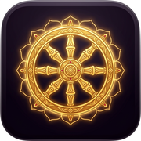

Native Tibetan pronunciation — tap any line to jump directly to it
🎤Authentic Tibetan Chanting
Seven-Line Prayer & Vajra Guru Mantra
Chanted 3× followed by OM AH HUNG BENZAR GURU PEMA SIDDHI HUNG
0:00
1:42
🔈🔊
SPEED
↓ Jump to Line
📿
3 Recitations
Your teacher chants the full Seven-Line Prayer three complete times, following traditional practice of triple recitation for deepening the connection to Guru Rinpoche.
🕉️
Closing Mantra
The recording closes with the full Vajra Guru Mantra — OM AH HUNG BENZAR GURU PEMA SIDDHI HUNG — sealing the practice with complete blessing.
🎧
How to Use
Listen through once fully. Then use the Jump to Line buttons above to replay individual lines and mimic your teacher's exact pronunciation.
The Seven-Line Prayer
Tsik Dün Soldep — Direct Invocation to Guru Rinpoche
This prayer was composed by Guru Rinpoche himself in the 8th century and is considered the most powerful prayer in the Nyingma tradition of Tibetan Buddhism.
🌸
Significance
Reciting this prayer is said to invoke Guru Rinpoche directly. It opens the door to all his blessings and is recommended at the start of every practice session.
☸️
The Mantra
The Vajra Guru Mantra encapsulates Body (OM), Speech (AH), and Mind (HUNG) of all Buddhas and Guru Rinpoche, condensed into 12 sacred syllables.
Word by Word
Click 🔊 on any word to hear its phonetic pronunciation
Opening Seed Syllable
HUNG
Sacred seed syllable — invocation of awakened power
"HOONG"
Line 1 — Ögyen yulgyi nupchang tsam
"In the north-west of the country of Uddiyana"
Ögyen
Uddiyana — sacred mystical land of Guru Rinpoche's birth
"UGG-yen"
yulgyi
of the country / of the land
"YOOL-gee"
nupchang
north-west / north-western direction
"NOOP-chang"
tsam
border / on the edge of
"TSAM"
Line 2 — Péma késar dongpo la
"In the heart of a lotus flower"
Péma
Lotus / Lotus flower (Sanskrit: Padma)
"PAY-ma"
késar
stamen / filament / pistil of a flower
"KAY-sar"
dongpo
heart / center / stalk / core
"DONG-po"
la
in / at / upon (location particle)
"la"
Line 3 — Yamtsen chokgi ngödrup nyé
"You are endowed with the supreme, wondrous siddhis"
Yamtsen
wondrous / marvelous / amazing
"YAM-tsen"
chokgi
supreme / highest / most excellent
"CHOK-gee"
ngödrup
siddhi / spiritual accomplishment / attainment
"NGÖ-drup"
nyé
obtained / endowed with / received
"NYAY"
Line 4 — Péma jungne shyésu drak
"And are renowned as the Lotus Born"
Péma
Lotus
"PAY-ma"
jungne
born from / arising from / originated
"JOONG-nay"
shyésu
known as / called / referred to as
"SHYAY-su"
drak
renowned / famous / celebrated
"DRAK"
Line 5 — Khordu khandro mangpö kor
"Surrounded by a host of many dakinis"
Khordu
in the retinue / surrounded / in the circle
"KOR-du"
khandro
dakini / sky-goer / enlightened feminine being
"KHAN-dro"
mangpö
many / numerous / a host of
"MANG-pö"
kor
encircled by / surrounded by
"KOR"
Line 6 — Chyéchyi jésu dagdrup kyi
"I will practice by following your example"
Chyéchyi
following you / in your footsteps
"CHYAY-chee"
jésu
after / in pursuit of / following
"JAY-su"
dagdrup
I will practice / I will accomplish
"DAG-drup"
kyi
by / through (grammatical particle)
"KEE"
Line 7 — Chingyi lapchir sheksu sol
"Please approach and grant your blessings!"
Chingyi
blessings / grace / empowerment
"CHIN-gee"
lapchir
to grant / to bestow / to give
"LAP-cheer"
sheksu
please come / please approach
"SHEK-su"
sol
I request / please (honorific supplication)
"SOL"
Closing — Guru Péma Siddhi HUNG
"Spiritual accomplishment through the Lotus Master"
Guru
Master / Spiritual Teacher
"GOO-roo"
Péma
Lotus — the epithet of Padmasambhava
"PAY-ma"
Siddhi
Accomplishment / Spiritual attainment
"SID-dee"
HUNG
Activating seal — indestructible mind
"HOONG"
Vajra Guru Mantra
"OM AH HUNG BENZAR GURU PEMA SIDDHI HUNG"
OM
Body of all Buddhas — universal seed syllable
"OHM"
AH
Speech of all Buddhas — pure open sound
"AAH"
HUNG
Mind of all Buddhas — deep resonant syllable
"HOONG"
BENZAR
Vajra / Diamond — indestructible clarity
"BEN-zar"
GURU
Master / Teacher / Spiritual Guide
"GOO-roo"
PEMA
Lotus — purity arising from muddy waters
"PAY-ma"
SIDDHI
Accomplishment / Spiritual attainment
"SID-dee"
HUNG
Final seal — activates all blessings
"HOONG"
Pronunciation Guide
Line-by-line phonetic guide — click ▶ to hear teacher's pronunciation
Line by Line
HUNG
Opening
"HOONG"
Deep, resonant — from the chest. Let it vibrate fully.
Ögyen yulgyi nupchang tsam
Line 1
"UGG-yen · YOOL-gee · NOOP-chang · TSAM"
'Ö' like 'u' in "burn". 'ts' like the end of "cats".
Péma késar dongpo la
Line 2
"PAY-ma · KAY-sar · DONG-po · la"
Smooth and flowing. 'la' is soft, like a musical note.
Yamtsen chokgi ngödrup nyé
Line 3
"YAM-tsen · CHOK-gee · NGÖ-drup · NYAY"
'ng' in ngödrup starts at the back of the throat (like "singing"). 'nyé' → "canyon" + "ay".
Péma jungne shyésu drak
Line 4
"PAY-ma · JOONG-nay · SHYAY-su · DRAK"
'drak' is short and crisp. End with energy.
Khordu khandro mangpö kor
Line 5
"KOR-du · KHAN-dro · MANG-pö · KOR"
'kh' is a gentle guttural sound. 'ö' like "burn".
Chyéchyi jésu dagdrup kyi
Line 6
"CHYAY-chee · JAY-su · DAG-drup · KEE"
'chyé' blends 'ch' and 'y' smoothly into one sound.
Chingyi lapchir sheksu sol
Line 7
"CHIN-gee · LAP-cheer · SHEK-su · SOL"
'sol' is like "soul" — hold it slightly. It is a heartfelt supplication.
Guru Péma Siddhi HUNG
Closing
"GOO-roo · PAY-ma · SID-dee · HOONG"
'Guru' — equal stress on both syllables. 'Péma' — stress on first syllable (PAY). 'Siddhi' — SID-dee. 'HUNG' — deep resonant HOONG; let it vibrate and dissolve into silence.
Go to the Listen tab and use the Jump buttons to hear each line from your teacher's own recording. This is the most authentic model to follow.
🫁
Breathe from the Belly
Tibetan chanting is diaphragmatic. Take a deep breath from your abdomen before each line — this gives richness and resonance to the sound.
🔤
The 'kh' Sound
In "khandro", the 'kh' is a soft guttural — like a very gentle throat clearing. It is softer than the Spanish 'j'.
🎵
The 'ng' in ngödrup
Start with 'ng' from the back of the throat (like the end of "singing"), then glide into "ödrup". Do not add a vowel before it.
🔄
Repeat Slowly
Start slower than feels natural. Accuracy before speed. Once muscle memory forms, your pace will naturally match your teacher's rhythm.
🙏
Devotion Over Perfection
Traditional teachings say sincere devotion matters more than perfect pronunciation. Chant with an open heart and Guru Rinpoche will meet you there.
Listen & Watch
Authentic chanting by masters and teachers
🏆 Most Authentic
Seven Line Prayer — Khen Rinpoche Sherab Yeshi
5.8M Views12:29
Essential listening — most popular authentic version by a respected Tibetan master.
🎼 Melodic & Clear
Tibetan Healing Chants — Drukmo Gyal
122K Views6:11
Slow and beautiful — perfect for beginners to follow along.
📖 Best for Beginners
Introduction & Instruction — Jetsunma Ahkön Lhamo
1.6K Views4:47
Guided teaching with full explanation of meaning and practice.
🕉️ Mantra Focus
Vajra Guru Mantra — Bhutan Guru
6M Views55:51
Very clear mantra pronunciation. Great for repetition practice.
🎨 Beautiful Production
Seven Line Prayer — feat. Dzongsar Khyentse Rinpoche
67K Views12:50
Artistically stunning version with one of the greatest living Tibetan masters.
🛡️ Extended Practice
Seven Line Prayer — Karma Tseten (24 min)
730K Views24:41
Extended session for deep practice and obstacle removal.
📿 Mala Counter
Count your recitations · One full mala = 108
🪷
Next Guru Rinpoche Day · Tse-Chu
Loading…
ཚེས་བཅུ། · 10th Day of the Lunar Month
–
days
0
🔥 Day Streak
0
🗓 Today
0
∞ Total
0
📿 Malas
0
/ 108
0 malas complete
🔔
Daily Practice Reminder
Get a gentle reminder to recite the Seven-Line Prayer every day
📅 LAST 7 DAYS
Video

Add to Home Screen
Save this prayer as an app on your iPhone for instant access & offline use
📱 Add to iPhone Home Screen
Seven-Line Prayer
1
Open in Safari
This must be done in Safari (not Chrome or other browsers)
2
Tap the Share Button ⎙
Tap the Share icon at the bottom of Safari (box with arrow pointing up)
3
Tap "Add to Home Screen"
Scroll down in the share sheet and tap "Add to Home Screen"
4
Tap "Add"
Confirm the name "7-Line Prayer" and tap Add — your icon appears instantly!
🙏 The app works offline once added. Your teacher's audio is fully cached.
📚 Sacred Library
The Prayer · Guru Rinpoche · The Eight Manifestations · The Mantra
💛
Origin of the Seven-Line Prayer
This prayer was not composed by a human being. According to the hidden treasure teaching revealed by Jamgön Kongtrul, billions of wisdom dākinīs joined as one voice to sing these seven vajra lines — an invocation calling Padmasambhava himself into this world to teach the secret mantra. Mipham Rinpoche called it “the most majestic of all prayers… a great treasure-trove of blessings and spiritual attainments.”
བོད་ཡིག Authentic Tibetan ScriptFrom the Nyingma canon
The seed syllable of Vajrasattva and Guru Rinpoche — the sound of awakened mind that magnetises all wisdom beings.
HUNG is not merely a word but a sonic key. It is the seed syllable of the vajra family, representing the indestructible nature of enlightened mind. Reciting it calls forth the blessing-energy of all the buddhas simultaneously.
Seed SyllableVajra Family
ཨོ་རྒྱན་ཡུལ་གྱི་ནུབ་བྱང་མཐམས
Ögyen yulgyi nupchang tsam
In the north-west of the land of Uddiṃyāna,
Uddiṃyāna (Tibetan: Örgyen) is the sacred land of Guru Rinpoche’s birth, traditionally located near the Swat Valley in modern-day Pakistan. It was a legendary realm famed as the ‘Land of Dākinīs,’ suffused with vajrayāna teachings. “North-west” is not merely geographic — it points to the direction of accomplishment and the magnetising power of the guru principle.
Sacred GeographyUddiṃyānaNorth-West
པདྨ་གེ་སར་སྡོང་པོ་ལ
Péma késar dongpo la
In the heart of a lotus flower,
Guru Rinpoche was born not from a womb but miraculously from the heart of a lotus on Lake Dhanakosha. The lotus represents purity — arising from muddy water yet unstained, it is the universal symbol of enlightened mind emerging within saṃsāra. His birth from a lotus also connects him to Amitābha Buddha, the Buddha of Infinite Light, whose pure land is Sukhavatī.
Miraculous BirthLotus SymbolismAmitābha
ཡ་མཚན་མཆོག་གི་དངོས་གྲུབ་བརྙེས
Yamtsen chokgi ngödrup nyé
Endowed with the most marvellous, supreme siddhis,
Siddhis are spiritual accomplishments — powers arising from awakened realisation. ‘Supreme siddhi’ (Skt. uttama-siddhi) refers to full enlightenment itself, while ordinary siddhis include clairvoyance, healing and the power to benefit beings across space and time. From the moment of his birth, Guru Rinpoche was recognised as already possessing these extraordinary qualities.
SiddhisAccomplishmentAwakening
པདྨ་འབྱུང་གནས་ཞེས་སུ་གྲགས
Péma jungne shyésu drak
Renowned as the Lotus-Born,
‘Padmasambhava’ in Sanskrit literally means ‘Lotus-Born’ (padma = lotus; sambhava = born from). This name was given to him by King Indrabhuti of Uddiṃyāna upon finding the radiant child seated on the lotus. It is his most universal name across all traditions and lineages.
PadmasambhavaLotus-BornName
འཁོར་དུ་མཁའ་འགྲོ་མང་པོས་བསྐོར
Khordu khandro mangpö kor
Surrounded by a host of many dākinīs,
Dākinīs (“sky-goers”) are female wisdom-beings who embody enlightened energy. They are the ‘air’ of vajrayāna practice — the dynamic, transformative quality of awareness. The fact that Guru Rinpoche is constantly surrounded by hosts of dākinīs affirms his status as the master of the entire dākinī realm, the very source of vajrayāna transmission.
DākinīsVajrayānaRetinue
ཁྱེད་ཀྱི་རྗེས་སུ་བདག་བསྒྲུབ་ཀྱི
Chyéchyi jésu dagdrup kyi
Following in your footsteps, I will practise,
This line is the practitioner’s personal commitment — a vow to walk the same path Guru Rinpoche walked. ‘Jésu’ means ‘in your wake,’ expressing complete surrender to the guru’s example. This is the essence of guru yoga: recognising that the teacher’s mind and one’s own mind are, in ultimate nature, inseparable.
Guru YogaCommitmentDevotion
བྱིན་གྱིས་བརླབ་ཕྱིར་གཤེགས་སུ་གསོལ
Chingyi lapchir sheksu sol
Please come and grant your blessings!
The final line is a direct, heartfelt supplication — an invitation to Guru Rinpoche to descend and bless the practitioner. ‘Byin rlabs’ (blessings) in Tibetan means literally ‘to be suffused with’ — a complete soaking in the energy of the awakened state. According to all lineage masters, Guru Rinpoche has pledged to appear to anyone who calls with sincere devotion.
SupplicationBlessingsByin rlabs
“Guru Rinpoche, the Precious Master, is the founder of Tibetan Buddhism and the Buddha of our time. While Buddha Shākyamuni exemplifies the Buddha principle, Padmasambhava personifies the guru principle — the very heart of Vajrayāna.”
— Rigpa Wiki
👑
Sanskrit Name
Padmasambhava
“Lotus-Born”
🏵
Tibetan Name
Péma Jungné
པད་མ་འབྱུང་གནས
❤️
Honorific
Guru Rinpoche
“Precious Master”
📅
Arrived Tibet
810 CE
Iron Tiger Year
🗺️
Birthplace
Uddiṃyāna
Lake Dhanakosha
⚛️
Tradition
Nyingma
Ancient School
📜 The Life Story
01
💐 Miraculous Birth — Lake Dhanakosha
In the sacred land of Uddiṃyāna, on an island in the Milk Lake (Dhanakosha), a miraculous eight-year-old child appeared seated in the heart of a lotus flower, radiating light in all directions. He was not born from a womb — he arose spontaneously as a manifestation of the wisdom of all the buddhas. King Indrabhuti, who was childless and longing for an heir, discovered this wondrous child while searching the lake for jewels. Recognising the child’s extraordinary qualities, he brought him to the palace and installed him as crown prince.
02
🕊️ Renunciation — Prince Becomes Wanderer
Though raised as royalty and married to the dākinī Prabhavatī, Guru Rinpoche knew his mission was vaster than any kingdom. Using a skilful means — he allowed an accident to occur that led to his exile — he renounced his royal life and entered the charnel grounds of India. There, in places like Shītavana (‘Cool Grove’) and the great cremation grounds, he practised Vajrayāna sādhana with complete dedication, receiving transmissions from wisdom dākinīs and taming wild spirits through the power of his realisation.
03
🔥 The Trial by Fire — Tso Pema
In the land of Zahor (present-day Mandi, India), Guru Rinpoche took the royal princess Mandarava as his consort to transmit profound teachings. Enraged, her father the king had him burned alive. But Guru Rinpoche, through his mastery of inner fire, transformed the pyre into a cool lake — the sacred Tso Pema (Rewalsar Lake), which still exists in Himachal Pradesh today. The king and all his ministers witnessed this miracle and immediately offered their kingdom in devotion. Mandarava became one of his most realised disciples.
04
📌 Arrival in Tibet — 810 CE
At the invitation of the great Dharma King Trisong Detsen, Guru Rinpoche journeyed to Tibet. The local spirits and non-Buddhist forces tried to prevent his arrival, but he subdued each one through his supreme yogic power, binding them as protectors of the Dharma. With the great Indian abbot Śāntarakṣita, he consecrated Samyé — Tibet’s first monastery — amid miraculous signs. He then transmitted the deepest Vajrayāna and Dzogchen teachings to the Twenty-Five Disciples, including the great Ẕeśé Tsogyel, the dākinī who became his foremost heart-disciple and scribe.
05
📜 Termas — Treasures for the Future
Knowing that future generations would need fresh transmissions, Guru Rinpoche and Ẕeśé Tsogyel concealed thousands of ‘termas’ (treasure teachings) throughout Tibet — hidden in rocks, lakes, the sky, and in the minds of realised disciples. These teachings were sealed with his blessing to be discovered at the precise time humanity would need them most. The tradition of tertöns (treasure revealers) who discover these termas continues to the present day.
06
✨ Departure — The Copper Coloured Mountain
After fifty-five and a half years in Tibet, in the Wood Monkey year (864 CE), Guru Rinpoche departed for Zangdokpalri — the Copper Coloured Mountain of Glory — a pure land in the south-west. His departure was not death but a transition to a realm from which he could benefit beings even more powerfully. His final teaching to Tibet: “I have not gone anywhere. I am in the nature of mind itself. Anyone who prays to me sincerely, I am already there.” He is said to appear in our world on every tenth day of the Tibetan lunar month to bless all who call upon him.
The Eight Manifestations (Tibetan: Guru Tsen Gye — གུ་རུ་མཐན་བརགརད) represent the eight principal forms assumed by Guru Rinpoche at key moments of his life. Each form encodes a teaching, a power, and an aspect of enlightened activity. They were systematised by the 12th-century master Nyangrel Nyima Özer and are depicted together in thangka paintings throughout the Himalayan world.
1
💧
Tsokye Dorje
མཚོ་སྐྱེས་རྡོ་རྗེ
Lake-Born Vajra
His primordial form — the miraculous eight-year-old child who appeared seated in the heart of a lotus on Lake Dhanakosha. This form represents the spontaneous arising of enlightened mind, unborn and untainted by ordinary causes. He holds a vajra and wears the robes of both a prince and a yogi.
2
🦁
Shakya Sengge
ཤཱཀྱ་སེང་གེ
Lion of the Shakyas
The monastic form, in which Guru Rinpoche received full ordination at Bodhgaya and studied under the great masters of India. ‘Shakya’ refers to the clan of Buddha Shākyamuni; ‘Sengge’ means lion. This form embodies the power of pure vinaya discipline and scholarship as the foundation for all tantra.
3
☀️
Nyima Özer
ཉི་མ་འོད་ཟེར
Rays of the Sun
The tantric siddha form — Guru Rinpoche as the blazing yogi who received the Dzogchen and Mahayāna teachings from great masters including Shri Singha and Mañjuśrīmitra. His practice in the charnel grounds earned him the name ‘Rays of the Sun,’ as his wisdom dispelled the darkness of ignorance like sunlight.
4
👑
Pema Gyalpo
པདྨ་རྒྱལ་པོ
Lotus King
The royal form — Guru Rinpoche as crown prince of Uddiṃyāna, the beloved heir of King Indrabhuti. This form represents the enlightened quality of sovereignty: the ability to guide and protect beings through skillful authority. He wears royal robes and the lotus crown, symbolising rulership in both worldly and spiritual realms.
5
📚
Loden Chokse
བློ་ལྡན་མཆོག་སྲེད
Wise One of Supreme Intelligence
The scholar-practitioner form who mastered all worldly sciences and the five vidyas (fields of knowledge). Loden Chokse thrived in the charnel grounds, where he received the rarest transmissions from wisdom beings. This form teaches that supreme intelligence arises not from books alone but from the direct meeting of brilliant mind with reality itself.
6
💐
Péma Jungné
པདྨ་འབྱུང་གནས
Padmasambhava, the Lotus-Born
The central and most celebrated form — Guru Rinpoche as he is most widely depicted, wearing the three robes of a monk over the garments of a tantrika, holding the khatvanga trident, and displaying the vajra. This is the form invoked in the Seven-Line Prayer. It represents the complete integration of all vehicles: vinaya, bodhisattva vow, and vajrayāna.
7
🦁
Sengge Dradrok
སེང་གེ་སྒྲ་སྒྲོག
Roaring Lion
A fierce, semi-wrathful form in which Guru Rinpoche defeated five hundred masters of wrong views in debate at Bodhgaya with the power of a lion’s roar — a sound so penetrating it could instantly cut through conceptual confusion. This form teaches that compassionate ferocity, not anger, is the antidote to nihilism and wrong understanding.
8
⚡
Dorje Drölö
རྡོ་རྗེ་གྲོལ་ལོ
Wild Wrathful Vajra
The most wrathful and terrifying form — depicted riding a pregnant tigress through flaming skies, with wild eyes, dishevelled hair and a vajra-purba (ritual dagger). Guru Rinpoche manifested as Dorje Drölö in five sacred tiger lairs across the Himalayan world to subjugate the most powerful demonic forces. He represents the supreme power to liberate even the most obstinate negative forces through direct insight into their true nature.
The Vajra Guru Mantra
ཨོཾ། ཨཿ། ཧཱུྃ། བཛྲ་གུ་རུ། པདྨ། སིདྡྷི། ཧཱུྃ།
OM · AH · HUNG · BENZAR GURU · PEMA · SIDDHI · HUNG
🔥 Syllable-by-Syllable Meaning
OM
ཨོཾ།
Body of all Buddhas
OM is the sacred primordial sound, representing the enlightened body of all awakened beings — the physical dimension of buddha nature manifesting as pure appearance.
/ohm/
AH
ཨཿ།
Speech of all Buddhas
AH is the seed syllable of the throat chakra, representing the enlightened speech of all buddhas — the expression of Dharma in all its forms, from a whispered teaching to the roar of emptiness.
/aah/
HUNG
ཧཱུྃ
Mind of all Buddhas
HUNG (Hūṃ) is the seed syllable of the heart chakra and the vajra family, representing the indestructible enlightened mind. It is the resonance of rigpa — pure awareness — itself. Together, OM AH HUNG consecrate body, speech and mind.
/hoong/
BENZAR
བཛྲ
Vajra — Indestructible
Vajra (Tibetan: Dorje) means diamond or thunderbolt — what cannot be cut, cannot be burned, cannot be stained. It represents the absolute nature of reality: the indestructible quality of awareness that underlies all phenomena, including confusion itself.
/ben dzar/
GURU
གུ་རུ
The Weighty One
Guru (Tibetan: Lama) means 'the heavy one' — heavy with qualities of wisdom and compassion. In Vajrayāna, the guru is not merely a teacher but the living embodiment of all three jewels (Buddha, Dharma, Sangha) and the gateway through which all blessings flow.
/goo roo/
PEMA
པདྨ
Lotus — Pūrna Manifestation
Pema (lotus) identifies Guru Rinpoche as an emanation of Amitābha, the Buddha of Infinite Light, whose seed syllable is HRIH and whose family is the lotus family of enlightened speech. The lotus arises unstained from murky water — compassion arising unstained within saṃsāra.
/pay ma/
SIDDHI
སིདྡྷི
Accomplishment
Siddhi means spiritual accomplishment — from ordinary siddhis (healing, clairvoyance, long life) to the supreme siddhi of complete enlightenment. Reciting SIDDHI is a request: 'Grant me all your accomplishments.'
/sid dhee/
HUNG
ཧཱུྃ
Gather — Bestow Now
The closing HUNG is the act of magnetising and gathering. It seals the mantra like a command: 'Let all these blessings, all these accomplishments, be gathered and bestowed upon me and all beings right now.' It is both an invocation and a recognition that the blessings are already present.
/hoong/
🙏 How to Practise
📿
Quantity
Traditionally recited in multiples of 108 (one mala). Long retreat practitioners accumulate 100,000 repetitions as a foundational practice. Even 21 repetitions daily carries immense blessing.
🗓️
Tenth Day
Guru Rinpoche pledged to manifest in tens of thousands of emanations each tenth day of the Tibetan lunar month (Guru Rinpoche Day) to bless all beings who pray to him. This is the most auspicious day for practice.
💡
Visualisation
While reciting, visualise Guru Rinpoche in the sky before you — deep blue sky, rainbow light, seated on a lotus-moon seat, golden-complexioned, smiling with loving-kindness. Let his blessings descend as white, red and blue light into your three centres.
🌟
Fruit
According to Mipham Rinpoche and all lineage masters: whoever recites this mantra sincerely will be protected from all obstacles, will receive empowerment of awareness, and will meet Guru Rinpoche at the moment of death — being guided directly to liberation.
💜
The Bodhicitta Supplication
These four lines — among the most recited in all of Tibetan Buddhism — are not merely a prayer but a vow renewed. Known in Tibetan as the Jangchub Semchok Mönlam (བྱང་ཆུབ་སེམས་མཆོག་སྨོན་ལམ), they are drawn from Shantideva's Bodhicharyavatara and transmitted through every living lineage. To recite them once, with genuine intention, plants the seed of awakening for all beings.
JANG CHUB SEM CHOK RINPOCHE · MA KYE PA NAM KYE GYUR CHIK
KYE PA NYAM PA ME PA YANG · GONG NE GONG DU PEL WAR SHOK
"Bodhicitta — precious and sublime —
may it arise where it has not yet done so;
where it has arisen, may it never decline,
but grow and flourish ever more and more."
བོད་ཡིག Authentic Tibetan ScriptFrom the Bodhicharyavatara tradition
This opening line establishes the subject: bodhicitta (བྱང་ཆུབ་སེམས, jangchub sem) — the mind of awakening, the wish to attain buddhahood for the benefit of all beings. The epithet rinpoche (རིན་པོ་ཆེ, precious jewel) signals that this quality is considered the most valuable thing in existence — rarer and more precious than any gem, because it is the very seed of buddhahood.
BodhicittaMahayanaAspiration
Line 2
མ་སྐྱེས་པ་རྣམས་སྐྱེས་གྱུར་ཅིག
MA KYE PA NAM KYE GYUR CHIK
"May it arise where it has not yet done so;"
The prayer turns outward immediately — not just "may I have bodhicitta" but "may it arise in all beings where it has not yet arisen." This is the mark of the Mahayana: one's own awakening is inseparable from the awakening of every sentient being. Ma kye (མ་སྐྱེས) means "not yet born / not yet arisen." Kye gyur chik (སྐྱེས་གྱུར་ཅིག) is the aspiration: "may it be born, may it arise."
AspirationAll BeingsArising
Line 3
སྐྱེས་པ་ཉམས་པ་མེད་པ་ཡང་།
KYE PA NYAM PA ME PA YANG
"Where it has arisen, may it never decline,"
Nyam pa (ཉམས་པ) means to deteriorate, degrade, or decline. The concern here is real: bodhicitta is fragile in early stages. It can be damaged by anger, destroyed by sectarian views, or simply forgotten in the rush of daily life. This line is a protection — a prayer that once ignited, the flame of compassionate intention never gutters out.
ProtectionContinuityNon-decline
Line 4
གོང་ནེ་གོང་དུ་འཕེལ་བར་ཤོག
GONG NE GONG DU PEL WAR SHOK
"But grow and flourish ever more and more."
Gong ne gong du (གོང་ནེ་གོང་དུ) means "higher and higher, more and more, ascending without limit." Pel war shok (འཕེལ་བར་ཤོག) is the aspiration "may it increase, may it grow." The prayer ends on an expansive upward note — not satisfied with merely preserving bodhicitta, but urging it to amplify and deepen in every being, in every moment, without ceiling.
IncreaseFlourishingAspiration
🔤 Word-by-Word Breakdown
JANG CHUB
བྱང་ཆུབ
Bodhi · Awakening
Sanskrit: bodhi. The state of being awake to the nature of mind and reality. "Jang" (བྱང) means purified of all obscurations; "chub" (ཆུབ) means perfected in all qualities. Together: the fully purified and perfected state of awakening.
/jang chub/
SEM
སེམས
Citta · Mind / Heart
Sanskrit: citta. In Tibetan, "sem" carries the full weight of both mind and heart — there is no separation. Bodhicitta (jangchub sem) is therefore "the awakened heart-mind" — not merely an intellectual understanding but a felt aspiration that permeates one's entire being.
/sem/
CHOK
མཆོག
Supreme · Most Excellent
An honorific superlative meaning "the highest," "the most excellent," "the supreme." Placing chok after bodhicitta signals that among all virtuous qualities and mental states, this one is considered foremost — the queen of all minds, the root of all liberation.
/chok/
RINPOCHE
རིན་པོ་ཆེ
Precious Jewel
"Rin" (རིན) = value/price; "po che" (པོ་ཆེ) = great. Literally "the great valuable one." Used as an honorific for revered teachers and for supremely precious objects or qualities. Here it emphasises that bodhicitta is the rarest and most priceless thing in all of samsara and nirvana.
/rin po che/
MA KYE
མ་སྐྱེས
Not yet arisen · Unborn
"Ma" (མ) is the Tibetan negative particle; "kye" (སྐྱེས) means born, arisen, generated. Together: "not yet born." This refers to all beings in whose hearts bodhicitta has not yet been awakened — the vast majority of sentient beings still wandering in unawareness.
/ma kye/
KYE GYUR CHIK
སྐྱེས་གྱུར་ཅིག
May it arise!
"Kye" (སྐྱེས) = to arise, to be born; "gyur chik" (གྱུར་ཅིག) is an optative construction meaning "may it become so!" This is the aspiration in its raw form — an earnest wish from the heart that the fire of awakening ignite in every being who has not yet found it.
/kye gyur chik/
NYAM PA
ཉམས་པ
Decline · Deterioration
"Nyam" (ཉམས) means to degrade, weaken, or fall away. In practice, bodhicitta can be damaged — most acutely by anger directed at a bodhisattva, or by abandoning beings. "Me pa" (མེད་པ) = "without." Together "nyam pa me pa" means "without decline, undegraded." A prayer for the protection of this most precious quality.
/nyam pa me pa/
GONG NE GONG DU
གོང་ནེ་གོང་དུ
Ever higher and higher
"Gong" (གོང) means "above, higher, ascending." The doubling "gong ne gong du" (གོང་ནེ་གོང་དུ) creates an intensive — "higher from higher," "ascending ever upward." It's a beautiful Tibetan grammatical device expressing limitless, continuous increase rather than a single jump.
/gong ne gong du/
PEL WAR SHOK
འཕེལ་བར་ཤོག
May it flourish!
"Pel" (འཕེལ) = to increase, expand, grow, flourish. "War shok" (བར་ཤོག) is the optative ending: "may it be so, may it come to pass!" This final phrase seals the aspiration — like a bodhisattva planting a seed in the deepest layer of reality and declaring with total confidence: "this WILL grow."
/pel war shok/
🙏 How to Practise
🌅
When to Recite
This prayer is recited at the opening of every Tibetan Buddhist practice session to set the intention, and again at the close of each session to dedicate merit. Reciting it at both ends of a session forms a complete arc: aspiration → practice → dedication.
💎
The Two Bodhicittas
Buddhist tradition speaks of two bodhicittas: aspiration bodhicitta — the wish to attain enlightenment for all beings (as in this prayer), and action bodhicitta — actually undertaking the six paramitas. This prayer cultivates the first as the seed of the second.
🌍
Universal Scope
Notice: the prayer never says "may I have bodhicitta." It says "where it has not yet arisen, may it arise." The subject is all beings. The reciter places themselves inside a vast vision of every sentient being simultaneously waking up to their own buddha nature.
📖
Source & Lineage
These verses are found in Shantideva's Bodhicharyavatara (8th c. CE) and are transmitted through every major Tibetan lineage: Nyingma, Kagyu, Sakya, and Gelug. They appear verbatim in the Mangala Shri Bhuti daily liturgy used by students of this tradition.
🌟
The Short Dedication of Merit
Known in Tibetan as Sönam Di Yi (བསོད་ནམས་འདི་ཡིས་), these four lines close virtually every Tibetan Buddhist practice session. They transform whatever merit — positive energy — was generated during practice into a universal offering dedicated to the liberation of all beings. Without dedication, merit is said to be lost; with it, even a single recitation of a mantra becomes a cause of buddhahood for every sentient being across all of space.
བསོད་ནམས་འདི་ཡིས་ · Sönam Di Yi · Short Dedication of Merit
SÖNAM DI YI TAMCHÉ ZIKPA NYI · TOP NÉ NYÉPÉ DRA NAM PAMJÉ TÉ
KYÉGA NACHI BALBÉ LAB TRUKPÉ · SIPÉ TSO LÉ DROWA DRÖL WAR SHOK
"By this merit, may all attain omniscience —
and having thus defeated the enemy of wrongdoing,
may all beings be freed from the ocean of existence
with its pounding waves of birth, old age, sickness, and death."
བོད་ཡིག Authentic Tibetan ScriptRecited at the close of every practice session
Sönam (བསོད་ནམས) means merit — the positive karmic energy accumulated through virtuous action. Di yi (འདི་ཡིས) = "by this," pointing directly to the merit just generated in this very session. Tamché zikpa nyi (ཐམས་ཅད་མཁྱེན་པར) = omniscience, the all-seeing wisdom of a fully awakened buddha. This first line is a transfer of ownership: whatever virtue was created, the practitioner offers it to power the omniscience of all beings — not merely their own.
MeritOmniscienceDedication
Line 2
འདི་ཡིས་ཐམས་ཅད་མཁྱེན་པ་ཐོབ་ནས་ནི།
TOP NÉ NYÉPÉ DRA NAM PAMJÉ TÉ
"And having thus defeated the enemy of wrongdoing —"
Nyépé dra (ཉེས་པའི་དགྲ) = the enemy of wrongdoing — not an external foe but the inner enemy of negative karma, obscuration, and delusion. Pamjé té (རྣམ་འཇོམས་བྱས་ཏེ) = having completely vanquished. Omniscience, once attained, automatically dissolves all obscurations — so the prayer says: by gaining all-knowing awareness, may every negative tendency be uprooted at its source.
PurificationKarmaObscurations
Line 3
འཇིག་རྟེན་ད་ག་པ་བྱིན་གྱིས་རྩིག་ལ་བྲལ།
KYÉGA NACHI BALBÉ LAB TRUKPÉ
"From the ocean of existence with its pounding waves —"
A vivid oceanic metaphor for samsara. Kyéga nachi = birth, old age, sickness, death — the four great sufferings of conditioned existence. Balbé lab trukpé = pounding waves, churning turbulence. The image is precise: we are not merely wet — we are being tossed by waves of uncontrolled birth and death, life after life, with no safe shore in sight. This line names the suffering that the dedication aims to end.
SamsaraFour SufferingsLiberation
Line 4
སྲིད་པའི་མཚོ་ལས་འགྲོ་བ་སྒྲོལ་བར་ཤོག།
SIPÉ TSO LÉ DROWA DRÖL WAR SHOK
"May all beings be liberated!"
Sipé tso (སྲིད་པའི་མཚོ) = the ocean of samsaric existence. Drowa (འགྲོ་བ) = wandering beings — all sentient life. Dröl war shok (སྒྲོལ་བར་ཤོག) = "may they be liberated!" — the optative of freedom. This final line is the punchline of the entire dedication: not a vague hope but a precise aspiration, directing the merit of the session toward the liberation of every being still drowning in the ocean of conditioned existence.
LiberationAll BeingsAspiration
🔤 Word-by-Word Breakdown
SÖNAM
བསོད་ནམས
Merit · Virtue · Positive karma
Sanskrit: puṇya. The positive energy generated by virtuous actions — generosity, ethics, patience, meditation. In Buddhist cosmology, merit is the fuel of the spiritual path: it purifies obscurations, creates fortunate rebirths, and ultimately powers awakening itself.
/sönam/
DI YI
འདི་ཡིས
By this · Through this
A demonstrative instrumental: "di" (འདི) = this, here, right now; "yi" (ཡིས) = the instrumental particle "by" or "through." Together: "by means of this" — pointing to the specific merit generated in the present practice session. The dedication is always specific and immediate, not abstract.
/di yi/
TAMCHÉ
ཐམས་ཅད
All · Every · Without exception
Sanskrit: sarva. An absolute universal — "all beings," "everything," "without any exception whatsoever." One of the most important words in Mahayana Buddhism: the bodhisattva's aspiration is always directed toward all beings, not a selected few. Even one's enemies are included — especially one's enemies.
/tamché/
ZIKPA NYI
མཐོང་བ་ཉིད
Omniscience · All-seeing buddha wisdom
Sanskrit: sarvajñatā. The all-knowing wisdom of a fully enlightened buddha — seeing all phenomena simultaneously, across all times, without error or partiality. This is the ultimate destination of the dedicated merit: not a comfortable rebirth, not supernatural powers, but complete and total awakening.
/zikpa nyi/
TOP NÉ
ཐོབ་ནས
Having attained · Upon reaching
"Top" (ཐོབ) = to attain, obtain, reach. "Né" (ནས) = a conjunctive particle: "having done, and then…" This creates a logical sequence: first attain omniscience, then, as a natural consequence, the enemy of wrongdoing is defeated. Enlightenment is not just the goal — it is the mechanism of liberation.
/top né/
DRA NAM PAMJÉ
དགྲ་རྣམས་རྣམ་འཇོམས
Vanquish all enemies of wrongdoing
"Dra" (དགྲ) = enemy, adversary; "nam" = plural "all of them"; "pamjé" (རྣམ་འཇོམས) = completely vanquished, utterly defeated. The "enemies" here are the kleshas — the mental poisons of ignorance, anger, and desire — and the karmic habitual patterns they generate. These are the only true enemies on the path.
/dra nam pamjé/
KYÉGA NACHI
སྐྱེ་རྒ་ན་འཆི
Birth · Old age · Sickness · Death
The four great sufferings of conditioned existence — the core of the First Noble Truth. "Kyé" (སྐྱེ) = birth; "ga" (རྒ) = old age; "na" (ན) = illness/sickness; "chi" (འཆི) = death. These four are the inescapable rhythm of samsara. The Buddha's first teaching was that these are dukkha — not punishment, but the nature of unexamined conditioned existence.
/kyé ga na chi/
SIPÉ TSO
སྲིད་པའི་མཚོ
Ocean of samsaric existence
"Sipé" (སྲིད་པའི) = of samsara, of conditioned existence, of becoming; "tso" (མཚོ) = lake, ocean, vast body of water. The metaphor is ancient and powerful: we are not walking on solid ground — we are immersed in an ocean of conditioned existence. Without a boat (the teachings), without an oarsman (the teacher), we simply sink deeper.
/sipé tso/
DROWA
འགྲོ་བ
Sentient beings · Wanderers
Sanskrit: sattva. Literally "those who go, those who wander" — a beautiful and compassionate word for all beings with mind. The implication of the root "dro" (འགྲོ = to go, to wander) is that beings are not stationary in suffering — they are endlessly moving through it, from life to life, realm to realm, with no fixed home.
/drowa/
DRÖL WAR SHOK
སྒྲོལ་བར་ཤོག
May they be liberated!
"Dröl" (སྒྲོལ) = to liberate, to free, to rescue — related to the name Tara (Drolma, she who liberates). "War shok" (བར་ཤོག) = the optative: "may it be, let it come to pass." This is the culminating aspiration of the entire prayer — and in a sense, of all Buddhist practice: that through the power of this merit, every wandering being be freed.
/dröl war shok/
🙏 How to Practise
🔚
The Closing Seal
This prayer always comes last — after every practice session, every meditation, every accumulation of mantra. In Tibetan Buddhism, practice without dedication is compared to a lamp left without a glass: the merit burns brilliantly but is scattered by the wind of circumstance and eventually exhausted. Dedication seals it permanently into the stream of all beings.
🌊
Merit as a River
Dedications work like redirecting a river. Merit generated by practice naturally flows toward its creator — personal benefit, good rebirth, comfort. Dedication reroutes that river toward all beings' liberation. Shantideva wrote: "Just as a drop of water that falls into the ocean will last until the ocean itself runs dry, so merit dedicated to awakening will last until awakening is reached."
🤲
How to Recite
Sit quietly at the end of your practice. Bring to mind all the merit generated — every moment of mindfulness, every mantra, every act of generosity or patience in the session. Then feel that merit as a warm light in your heart, and as you recite these four lines, consciously release it — letting it radiate outward to every being in every direction, like sunlight released from a clenched fist.
🔗
Paired with Bodhicitta
The Short Dedication of Merit is inseparable from the Bodhicitta Supplication. Together they form the frame of every practice: Bodhicitta opens the session ("may this mind of awakening arise"), and Dedication closes it ("may the merit of this session free all beings"). Student of any lineage — Nyingma, Kagyu, Sakya, Gelug, Theravada — will recognise these two prayers as the twin pillars of daily practice.
💙
The Four Immeasurables
Known in Tibetan as Tsad-med bZhi (ཚད་མེད་བཞི) and in Sanskrit as Brahmavihāra — the Four Divine Abodes — these are the four boundless qualities of an awakened heart: love, compassion, sympathetic joy, and equanimity. They are called "immeasurable" because they are directed toward immeasurable beings, and because the merit they generate is itself beyond measure. Every school of Buddhism — Theravāda, Mahāyāna, Vajrayāna — considers these four the very foundation of the spiritual path.
ཚད་མེད་བཞི · Tsad-med bZhi · The Four Immeasurables
SEM CHEN TAMCHÉ DEWA DANG DEWÉ GYU DANG DENPAR GYUR CHIK
SEM CHEN TAMCHÉ DUGNGAL DANG DUGNGAL GYI GYU DANG DRELWAR GYUR CHIK
SEM CHEN TAMCHÉ DUGNGAL MEPE DEWA DANG MI DRELWAR GYUR CHIK
SEM CHEN TAMCHÉ NYING RING CHAKDANG GYI DRELWÉ TANGNYOM LA NEPAR GYUR CHIK
May all beings have happiness and the causes of happiness.
May all beings be free from suffering and the causes of suffering.
May all beings never be separated from joy beyond suffering.
May all beings dwell in the great equanimity, free from attachment and aversion.
བོད་ཡིག Authentic Tibetan ScriptBrahmavihāra — the Four Divine Abodes
"May all beings have happiness and the causes of happiness."
The first immeasurable is mettā (Pali) / maitrī (Sanskrit) — loving-kindness or love. Note the crucial word "causes" (gyu, རྒྱུ): the prayer doesn't just wish beings to have happiness right now, but that they have the causes — the virtuous actions, the positive conditions, the dharmic understanding — that will generate sustainable happiness. Temporary happiness without its causes disappears; happiness rooted in its causes is self-renewing. This line is practiced by generating an open, warm feeling of goodwill and directing it toward all beings without exception — beginning with oneself, expanding outward to loved ones, neutral beings, difficult people, and finally all beings across all realms.
"May all beings be free from suffering and the causes of suffering."
Karuṇā (Tibetan: nyingjé, སྙིང་རྗེ) — literally "noble heart," the wish for beings to be free from suffering. Again the word "causes" (gyu) appears: it's not enough to wish that beings stop suffering right now, but that they uproot the causes — negative karma, destructive actions, the mental poisons of ignorance, anger, and desire that perpetually recreate suffering. Compassion is not pity — it's an active, courageous wish to eliminate the mechanisms of suffering itself. The Tibetan word nyingjé breaks down as "nying" (heart) + "jé" (noble, lordly) — literally "noble heart." The Bodhisattva vow is rooted here: seeing suffering and resolving to do something about it.
SEM CHEN TAMCHÉ DUGNGAL MEPÉ DEWA DANG MI DRELWAR GYUR CHIK
"May all beings never be separated from joy beyond suffering."
Muditā — sympathetic joy, or appreciative joy. This is the antidote to envy: the capacity to rejoice in others' happiness, success, and virtue without any trace of jealousy. Notice the phrase "joy beyond suffering" (dugngal mepé dewa, སྡུག་བསྔལ་མེད་པའི་བདེ་བ) — not just ordinary happiness which is tinged with impermanence and anxiety, but the deep, unshakeable joy that comes from liberation itself. The aspiration is that beings find not just fleeting good fortune but the joy that transcends the entire mechanism of suffering — the joy of recognising the nature of mind.
SEM CHEN TAMCHÉ NYING RING CHAKDANG GYI DRELWÉ TANGNYOM LA NEPAR GYUR CHIK
"May all beings dwell in the great equanimity, free from attachment and aversion."
Upekkhā (Tibetan: tangnyom, བཏང་སྙོམས) — equanimity, evenness of mind. The Tibetan word tangnyom breaks down beautifully: "tang" (བཏང) = to let go, to release; "nyom" (སྙོམས) = evenness, levelness, sameness. Together: "the evenness of letting go." This is not indifference — it is the absence of nying ring chakdang (ཉེ་རིང་ཆགས་སྡང): near and far, attachment and aversion — the pulling toward what we like and pushing away what we don't. Equanimity holds all beings equally, with the same warmth: loved ones, strangers, and enemies alike. It is the stabilising ground from which love, compassion, and joy can operate without burning out.
UpekkhāEquanimityTangnyomNon-attachment
🔤 Key Terms Breakdown
SEM CHEN
སེམས་ཅན
Sentient Being · Mind-Possessor
Sanskrit: sattva. "Sem" (སེམས) = mind; "chen" (ཅན) = possessing, having. Literally "one who has mind." In Buddhism, this means any being capable of experiencing pleasure and pain — from insects to gods. The Four Immeasurables are directed without exception toward every one of them.
/sem chen/
TAMCHÉ
ཐམས་ཅད
All · Every · Without exception
Sanskrit: sarva. The most important word in the prayer — it appears in every single line. "All beings" is not a vague phrase but a deliberate practice: the mind is trained to hold every sentient being simultaneously, including those we find difficult, even our enemies. Especially our enemies.
/tamché/
DEWA
བདེ་བ
Happiness · Bliss · Ease
Sanskrit: sukha. The opposite of duḥkha (suffering). In Buddhist thought, genuine happiness is not mere pleasure — it's the deep ease of a mind at peace with reality. The prayer wishes beings both the happiness and its causes, because happiness without its causes is just luck; happiness with its causes is sustainable.
/dewa/
GYU
རྒྱུ
Cause · Root · Origin
Sanskrit: hetu. One of the most important concepts in Buddhist philosophy — karma operates through causes and conditions. "Gyu" (cause) appears in both the first and second lines: the prayer wishes beings both happiness and its causes, and freedom from both suffering and its causes. This double aspiration reflects the Buddhist understanding that surface conditions are less important than the deep causes generating them.
/gyu/
DUGNGAL
སྡུག་བསྔལ
Suffering · Duḥkha · Unsatisfactoriness
Sanskrit: duḥkha — the first of the Four Noble Truths. In Tibetan, "dug" (སྡུག) has connotations of poison, darkness; "ngal" (བསྔལ) of weariness, exhaustion. Together: the exhausting, toxic quality of unexamined conditioned experience. Appears in lines 2, 3, and 4 — compassion directly confronts suffering rather than averting its gaze.
/dugngal/
DRELWAR GYUR CHIK
བྲལ་བར་གྱུར་ཅིག
May they be separated from · May they be freed!
"Drel" (བྲལ) = separated, parted from, freed; "war" is a verb-nominaliser; "gyur chik" (གྱུར་ཅིག) = the optative "may it become so!" This is the aspiration engine of lines 2 and 3 — the active wish for separation from suffering and its causes. Compare with line 1's "denpar gyur chik" (may they be endowed with) — opposite aspirations perfectly mirrored.
/drel war gyur chik/
NYINGJÉ
སྙིང་རྗེ
Compassion · Noble Heart
"Nying" (སྙིང) = heart, essence, core; "jé" (རྗེ) = noble, lord, master. Literally "noble heart" or "heart-lord." The Tibetan term for compassion is deeper than its Sanskrit equivalent — it implies not just an emotion but a regal quality of heart that sees suffering with clear eyes and responds with sovereign care, neither panicking nor turning away.
/nying jé/
TANGNYOM
བཏང་སྙོམས
Equanimity · Evenness of letting go
"Tang" (བཏང) = to let go, release, send forth; "nyom" (སྙོམས) = evenness, equality, levelness. Together: the even, open quality that results from releasing bias. Equanimity is not coldness — it is love and compassion without the distortions of attachment and aversion. It is the sky in which all weather arises without the sky itself being disturbed.
/tang nyom/
CHAKDANG
ཆགས་སྡང
Attachment and Aversion
"Chak" (ཆགས) = attachment, craving, clinging — desire that pulls toward what we want; "dang" (སྡང) = aversion, hatred, repulsion — the push away from what we don't want. These two are the fundamental poles of samsaric existence. Equanimity is explicitly defined as freedom from both — not choosing one over the other, but transcending the entire axis.
/chak dang/
NYING RING
ཉེ་རིང
Near and Far · Partiality
"Nying" (ཉེ) = near, close, familiar; "ring" (རིང) = far, distant, unfamiliar. This pair expresses the basic bias of ordinary mind: we love those close to us more than strangers, and care little for those far away. Equanimity dismantles this — it sees no "near" and "far," no "mine" and "theirs." All beings are equally deserving of care.
/nying ring/
DENPAR GYUR CHIK
ལྡན་པར་གྱུར་ཅིག
May they be endowed with · May they possess!
"Den" (ལྡན) = to possess, be endowed with, have as a quality; "par gyur chik" = the optative "may it come to be so." This is the positive aspiration of Line 1 — may beings possess happiness and its causes, be filled with them, be characterised by them. The counterpart to "drelwar gyur chik" (may they be freed from) in lines 2 and 3.
/denpar gyur chik/
GYUR CHIK
གྱུར་ཅིག
May it be so! · The Optative
"Gyur" (གྱུར) = to become, to be transformed; "chik" (ཅིག) = the optative particle "may, let, I wish that." This two-syllable ending closes every single line of the Four Immeasurables — four times the heart says "may it be so." In Tibetan grammar this is not a passive wish but an active aspiration, a directing of the mind's energy toward a specific outcome.
/gyur chik/
🙏 How to Practise
🌊
The Expanding Circles Method
Begin with yourself. As you recite each line, generate the feeling first for yourself — feel what it would be like to truly have happiness and its causes. Then expand outward like ripples: to loved ones, to neutral beings (strangers on the street), to difficult people, and finally to all beings in all realms simultaneously. This graduated expansion is the classical Theravāda method, preserved intact in the Tibetan tradition.
🔗
Universal Foundation
The Four Immeasurables are the one prayer common to every school of Buddhism. A Theravāda monk in Burma and a Nyingma lama in Bhutan both recite essentially the same aspiration. This makes it the ideal starting point for any student — regardless of tradition — and the natural bridge between Buddhist schools. In the MSB daily liturgy they open every session.
⚕️
The Four as Antidotes
Each of the four immeasurables is the direct antidote to a specific mental poison: Love dissolves hatred; Compassion dissolves cruelty and indifference; Sympathetic Joy dissolves envy and jealousy; Equanimity dissolves attachment and aversion. Together they cover the full spectrum of afflicted emotion — making this a complete emotional-purification practice in four lines.
🔬
Science Meets Dharma
The Four Immeasurables are among the most-studied meditation practices in modern neuroscience. Research at the University of Wisconsin (Richard Davidson), Stanford (CCARE), and Oxford has found that regular Mettā (loving-kindness) practice measurably increases positive affect, reduces implicit bias, strengthens the immune system, and thickens the insula and anterior cingulate cortex — the brain regions associated with empathy and emotion regulation.
🙏
The Seven-Limb Prayer · ཡན་ལག་བདུན་པ · Yan-lag bDun-pa
The Seven-Limb Prayer is the universal merit-accumulation and purification practice common
to all Tibetan Buddhist schools. Its seven limbs — prostration, offering, confession,
rejoicing, requesting teachings, beseeching the teacher to remain, and dedication — form
a complete antidote to the seven root afflictions and systematically accumulate the two
accumulations of merit and wisdom. In the MSB daily liturgy it follows the Four
Immeasurables and precedes the main practice. Shāntideva's Bodhicaryāvatāra
(Ch. 2–3) is the most celebrated treatment.
🙏
ཡན་ལག་བདུན་པ · Saptāṅga-pūjā
The Seven-Limb Prayer
Seven limbs · Seven antidotes · Two accumulations
Merit & Wisdom · The complete offering of body, speech, and mind
SANG GYÉ CHÖ DANG TSOK KYI CHOK NAM LA / JANG CHUB BAR DU DAG NI KYAB SU CHI / DAG GI JIN SOK GYI PÉ SÖNAM KYI / DRO LA PEN CHIR SANG GYÉ DRUB PAR SHOK
"In the Buddha, Dharma, and the noble Sangha / I take refuge until I attain enlightenment. / By the merit of generosity and other virtues / may I accomplish Buddhahood for the benefit of all beings."
This opening verse is simultaneously a Prostration (bowing body, speech, and mind) and a Taking of Refuge. In Tibetan practice, physical prostrations are performed here — full-body or half-body — as the supreme antidote to pride (nga-rgyal). Shāntideva opens the Bodhicaryāvatāra with this same triple-bow: "I prostrate to the Sugatas, to their Dharma body and their heirs, and to all who are worthy of homage." The final two lines transpose the act into altruistic purpose: all merit generated is immediately dedicated to the liberation of every sentient being, not kept for oneself.
METOK DUK PO JUK SHING NYEN DRI DANG / MAR ME DANG NI DRI CHAB MEN DI DAK / CHOK NAM DIR NI DAG GYI BUL WAR GYI / TUK JE CHENPO ZUNG SHIK DAG GI BUL
"Flowers, incense, fragrant plants, sweet scents, / butter-lamps, perfumed water, and medicine — / these I offer in all directions. / With great compassion, please accept this offering."
Pūjā (Tibetan: chöpa) — offering. The eight traditional offerings are water for drinking, water for washing, flowers, incense, light, perfume, food, and music. Crucially, Tibetan practice allows imagined offerings to carry the same merit as real ones, because merit is determined by mind, not matter. The direct antidote to miserliness (ser-na): every time we offer — even mentally — we loosen the grip of the possessive mind. The phrase "in all directions" acknowledges the inconceivable number of Buddhas and bodhisattvas throughout all universes.
TOK MA ME NÉ TSÉ DI KYI BAR DU / DAG DANG DRO WA TAMCHÉ KYI NI / LÜ NGAK YI KYI NÖNMONG WANG GI NI / DIG PA TAMCHÉ SHAK PAR GYI
"From beginningless time until this very life, / whatever negative actions I and all beings / have committed through body, speech, and mind / under the power of afflictive emotions — I confess them all."
The Tibetan shāk-pa (བཤགས་པ) means to openly acknowledge, declare, lay bare. This is not the same as Catholic confession requesting absolution from an external authority; rather, it is the mind recognising its own negative patterns clearly, in the presence of the enlightened field, and relinquishing the habit of concealment (bel-ba). The four powers that make confession effective are: (1) support — the refuge field; (2) regret — genuine remorse; (3) resolve — determination not to repeat; (4) remedy — the antidote practice itself. "From beginningless time" acknowledges that our karma spans countless lifetimes and that the confession is therefore unlimited in scope.
Pāpa-deśanāFour PowersAntidote to ConcealmentPurification
SANG GYÉ JANG CHUB SEMPA DANG / RANG SANG GYÉ NYEN TÖ TAMCHÉ KYI / GE WA JI NYI KYE WA DANG / DE LA DAG NI JE YI RANG
"In the virtue, however much, performed by / Buddhas, bodhisattvas, pratyekabuddhas, and śrāvakas — / in all of that I rejoice."
Anumodanā — sympathetic rejoicing. This is the cheapest and most generous merit-practice in all of Buddhism: by genuinely rejoicing in the virtues of others, one accumulates an equal share of that merit without performing the action oneself. The direct antidote to envy (prag-dog). Nāgārjuna noted that a poor person who rejoices sincerely in a wealthy patron's generosity acquires more merit than the patron, because the patron's mind may be mixed with pride while the rejoicer's mind is pure admiration. The list covers all vehicles: Buddhas (complete enlightenment), bodhisattvas (Mahāyāna path), pratyekabuddhas (solitary realisers), and śrāvakas (hearers of the Hīnayāna).
JIK TEN KUN NA Ö PA GANG DAK NI / JANG CHUB JANG CHUB SHING GI DRUNG NA ZHUK / KHORWA TAMCHÉ GYAL JÉ SEM KYÉ PA / CHÖ KYI KHOR LO KOR WAR SOL
"You who shine in every world, / seated at the foot of the Bodhi Tree having conquered Māra — / please turn the Wheel of Dharma / for the benefit of all wandering beings."
The Wheel of Dharma (chos-kyi 'khor-lo, dharma-cakra) was set in motion by the Buddha at Sarnath after his enlightenment. Requesting teachings is itself a profound act because it requires humility — acknowledging that one does not yet understand — and creates the karmic condition for teachings to arise. It is the antidote to wrong views (log-ta): by actively requesting genuine Dharma, we open the channel through which wisdom can flow. In the practice context, this request is directed not only to the historical Buddha but to all enlightened beings throughout all world-systems simultaneously.
Dharma-yācanāDharma WheelAntidote to Wrong ViewsSpeech
SANG GYÉ JANG CHUB SEMPA DANG / NYEN TÖ RANG SANG GYÉ LA GYI / DRO WA KUN GYI PEN PAR DZÉ CHIR DU / YÉ NÉ MI DA BAR DU ZHUK PAR SOL
"To the Buddhas, bodhisattvas, / śrāvakas, and pratyekabuddhas — / for the benefit of all wandering beings, / please remain without ever passing into nirvāṇa."
This limb asks all enlightened teachers, protectors, and dharma-guardians to remain present in the world rather than passing away. In the Vajrayāna context it is directed especially toward one's root guru — the living embodiment of all the Buddhas. The prayer recognises a deep truth: enlightened beings do not actually die in the ordinary sense, but their manifest presence in the world — their ability to guide beings — can cease. Requesting them to remain is the antidote to ingratitude (bkur-sti med-pa): consciously valuing the presence of spiritual guides. The phrase "without ever passing away" (yé-né mi-'da') echoes the bodhisattva's vow to remain in saṃsāra until every being is liberated.
Sthiti-yācanāGuru LongevityAntidote to IngratitudeAll Vehicles
GE WA DI YI NYUR DU DAG / SANG GYÉ DRUB GYUR NÉ / DRO WA CHIK KYANG MA LÜ PA / DE YI SA LA GÖ PAR SHOK
"By this virtue may I swiftly / attain Buddhahood, / and then place every single being / upon that same ground."
Pariṇāmanā — dedication, transference of merit. Dedication "seals" all previously accumulated merit, protecting it from being destroyed by anger or wrong view. Without dedication, a single moment of genuine anger can annihilate the merit accumulated over an entire session. Dedication is therefore the final, essential act of wisdom — like sealing a letter before it can blow away. The aspiration here is the full bodhisattva vow in a single verse: not just "may I attain enlightenment" but "may I then place every single being upon that same ground" — not leaving even one behind. This verse connects directly to the Short Dedication of Merit module you have already studied.
PariṇāmanāSealing MeritBodhisattva VowAll Beings
🔤 Key Terms Breakdown
SANG GYÉ
སངས་རྒྱས།
Buddha — The Awakened One
From "sang" (purified) + "gyé" (blossomed). One who has purified all obscurations and developed all qualities — omniscience, compassion, power.
JANG CHUB SEMPA
བྱང་ཆུབ་སེམས་དཔའ།
Bodhisattva — Hero of Awakening
"Jang chub" = awakening/enlightenment; "sempa" = courageous being. One who has generated bodhicitta and is on the path for the benefit of all beings.
CHÖ KYI KHOR LO
ཆོས་ཀྱི་འཁོར་ལོ།
Wheel of Dharma
The metaphor of a turning wheel represents the spread of Buddha's teachings. Three turnings occurred: Varanasi (Four Truths), Vulture Peak (Prajñāpāramitā), Vaiśālī (Buddha-nature).
SHAK PAR GYI
བཤགས་པར་བགྱི།
I confess
"Shak" = to openly disclose, lay bare, not conceal. Not guilt-based confession but clear recognition in the presence of the refuge field.
JE YI RANG
རྗེས་སུ་ཡི་རང་།
I rejoice
"Jé su yi-rang" = to follow-after rejoice, to take delight in. Nāgārjuna: rejoicing at others' merit earns equal merit with pure mind, no action required.
GE WA
དགེ་བ།
Virtue / Merit
Sanskrit: puṇya. "Virtue" or "positive karma" — energy created by constructive actions of body, speech, and mind. The Seven Limbs are specifically designed to accumulate this.
SÖNAM
བསོད་ནམས།
Merit / Accumulation
Sanskrit: puṇya-sambhāra. The "accumulation of merit" — one of the two accumulations (with wisdom) needed for enlightenment. This entire prayer is its engine.
PARIṆĀMANĀ
བསྔོ་བ།
Dedication
Tibetan: ngö-wa. To dedicate/transfer merit. Seals the session. Without dedication, anger can destroy accumulated merit. With it, merit is sealed and directed toward liberation of all.
🧘 How to Practise
🏗️
The Two Accumulations
The Seven Limbs are specifically designed to accumulate merit (through prostration, offering, requesting, beseeching) and wisdom (through confession, rejoicing, dedication). Together they build the "two wings" that carry a practitioner to enlightenment. No other prayer in the Tibetan liturgy covers both accumulations so efficiently.
⚗️
Seven Antidotes
Each limb is the direct antidote to one of seven mental afflictions: Pride → Prostration; Miserliness → Offering; Concealment → Confession; Envy → Rejoicing; Wrong Views → Requesting; Ingratitude → Beseeching; Self-grasping → Dedication. Practising all seven in sequence is a complete emotional-purification in miniature.
📍
Place in the Session
In the MSB daily liturgy: Refuge → Four Immeasurables → Seven-Limb Prayer → Mandala Offering → Main Practice → Short Dedication of Merit. The Seven-Limb Prayer "sets the stage" by purifying the mind (Limbs 3), accumulating merit (Limbs 1, 2, 5, 6), and aligning motivation (Limbs 4, 7) before the main Guru Yoga or Sādhana practice.
🔁
Śāntideva's Version
The Bodhicaryāvatāra (Chapters 2–3) is the most celebrated poetic expansion of the Seven-Limb Prayer. Śāntideva devotes hundreds of verses to elaborating each limb. Many Tibetan teachers say that if one had to study only one text for an entire lifetime, the Bodhicaryāvatāra — built around this seven-limbed structure — would suffice.
❤️
The Heart Sūtra · བཅོམ་ལྡན་འདས་མ་ཤེས་རབ་ཀྱི་ཕ་རོལ་ཏུ་ཕྱིན་པའི་སྙིང་པོ · Prajñāpāramitāhṛdaya
The Heart Sūtra is the most recited text in Mahāyāna Buddhism, chanted daily in Zen monasteries,
Tibetan dharma centres, Pure Land temples, and Theravāda vipassanā halls alike. Its 260 Sanskrit words
distil the essence of the 100,000-verse Prajñāpāramitā literature into a single dialogue
between the bodhisattva Avalokiteśvara and the monk Śāriputra. The central teaching — "form is
emptiness; emptiness is form" — is the heart of Mahāyāna philosophy. In the MSB daily liturgy it
follows the Seven-Limb Prayer and precedes the main sādhana practice. The Tibetan version used here
follows the standard Kangyur recension (bKa' 'gyur), as translated by Adam Pearcey (Lotsawa House, 2019).
❤️
ཤེས་རབ་ཀྱི་ཕ་རོལ་ཏུ་ཕྱིན་པའི་སྙིང་པོ
The Heart of the Perfection of Wisdom
Prajñāpāramitāhṛdayasūtra
260 Sanskrit words · The heart of 100,000 verses · Form & emptiness · Gate gate pāragate
Bhagavatī prajñāpāramitā hṛdaya · Homage to the Bhagavatī Prajñāpāramitā!
"Thus have I heard. At one time the Blessed One was dwelling in Rājgṛha at Vulture Peak mountain, together with a great community of monks and a great community of bodhisattvas. At that time, the Blessed One entered an absorption on categories of phenomena called 'perception of the profound.'"
The sūtra opens with the canonical formula evaṁ mayā śrutam — "thus have I heard" — establishing that this is the direct transmission of the Buddha's words, heard by Ānanda at the First Council. Vulture Peak (Gṛdhrakūṭa, Tibetan: Bya-rgod phung-po'i ri) near Rājgṛha is where the Buddha gave the Prajñāpāramitā teachings. The absorption (samādhi) called "perception of the profound" (Tibetan: zab-mo snang-ba) is the meditative state from which Avalokiteśvara's realisation arises — establishing that what follows is the fruit of direct meditative insight, not conceptual reasoning.
CHEN RE ZIK KYI PHUNG PO NGA RANG ZHIN GYI TONG PAR ZIK
Noble Avalokiteśvaro bodhisattvo gambhīrāṁ prajñāpāramitā caryāṁ caramāṇo vyavalokayati sma pañca-skandhāṁs tāṁś ca svabhāva-śūnyān paśyati sma.
"Noble Avalokiteśvara, the bodhisattva and great being, beheld the practice of the profound perfection of wisdom, and saw that the five aggregates are empty of nature."
The five aggregates (pañca-skandha, Tibetan: phung-po lnga) are the five constituents of a person: form (rūpa), sensation (vedanā), perception (saṃjñā), mental formations (saṃskāra), and consciousness (vijñāna). Avalokiteśvara sees them as "empty of nature" (svabhāva-śūnya) — not that they don't exist, but that they lack any fixed, independent, self-established existence. This is the gateway to the sutra: direct meditative vision, not philosophical argument. The Tibetan name for Avalokiteśvara is Chenrezig (སྤྱན་རས་གཟིགས་) — literally "one who sees with clear eyes." He sees what the rest of us miss.
ZUK TONG PA O / TONG PA NYI ZUK SO / ZUK LÉ TONG PA NYI ZHEN MIN / TONG PA NYI LÉ KYANG ZUK ZHEN MIN
Iha Śāriputra, rūpaṁ śūnyatā, śūnyataiva rūpaṁ; rūpān na pṛthak śūnyatā, śūnyatāyā na pṛthag rūpaṁ; yad rūpaṁ, sā śūnyatā; yā śūnyatā, tad rūpaṁ. Evam eva vedanā-saṃjñā-saṃskāra-vijñānam.
"O Śāriputra, form is emptiness; emptiness is form. Emptiness is not other than form; form is not other than emptiness. Whatever form there is, that is emptiness; whatever emptiness there is, that is form. In the same way, sensation, perception, conditioning factors, and consciousness are all emptiness."
The most celebrated lines in Mahāyāna Buddhism. Four identical statements establish mutual identity: form (1) is empty, (2) emptiness is form, (3) form is not separate from emptiness, (4) emptiness is not separate from form. This is not nihilism — emptiness (śūnyatā) does not mean "nothing exists." It means that the phenomenon called "form" arises dependently: it has no fixed, self-established essence. The equation is symmetrical: to see form clearly is to see emptiness; to see emptiness clearly is to see form. Then all five skandhas receive the same declaration — the full architecture of personal experience dissolves into dependent arising. For Tibetan practitioners this verse is the entire Prajñāpāramitā in miniature.
CHÖ TAMCHÉ TONG PA NYI TSEN NYI MED / MA KYÉ MA GAK / DRI MA MED DRI MA DANG DRAL MIN / DRI WA MED GANG WA MIN
Iha Śāriputra, sarva-dharmāḥ śūnyatā-lakṣaṇā, anutpannā, aniruddhā, amalā, avimalā, anūnā, aparipūrṇāḥ. Tasmāc Śāriputra, śūnyatāyāṁ na rūpaṁ, na vedanā, na saṃjñā, na saṃskārāḥ, na vijñānam; na cakṣuḥ-śrotra-ghrāṇa-jihvā-kāya-manāṃsi… na duḥkha-samudaya-nirodha-mārgā; na jñānam, na prāptir na aprāptiḥ.
"Therefore, Śāriputra, all dharmas are emptiness; without characteristics; unarisen and unceasing; not tainted and not untainted; not deficient and not complete. Therefore, Śāriputra, in emptiness there is no form, no sensation, no recognition, no conditioning factors, no consciousness; no eye, ear, nose, tongue, body, mind; no visible form, sound, odour, taste, texture or mental objects; no eye-element up to no mind-consciousness element; no ignorance, no extinction of ignorance, up to no old age and death, no extinction of old age and death. Likewise, no suffering, no origin, no cessation and no path; no wisdom, no attainment, and no non-attainment."
The "great negation" — perhaps the most radical philosophical statement in any tradition. The sutra systematically dismantles every conceptual framework a practitioner might cling to: the five skandhas (personal existence), the six sense bases (experience), the twelve āyatanas (sense contact), the eighteen dhātus (consciousness), the twelve links of dependent origination (saṃsāric existence), and finally the Four Noble Truths themselves (duḥkha-samudaya-nirodha-mārgā) — the very teaching-structure of Buddhism. Even wisdom and attainment are negated. This is not nihilism but the ultimate thoroughness of emptiness: even the concept of emptiness is empty. The phrase "no old age and death" (jarā-maraṇam) — the last link of the twelve nidānas — points directly to liberation from the cycle of rebirth.
Twelve NidānasSix Sense BasesFour Noble TruthsRadical Negation
"Therefore, Śāriputra, since bodhisattvas have no attainment, they rely on and abide by the perfection of wisdom. Since their minds are unobscured, they have no fear. They completely transcend error and reach the ultimate nirvāṇa. All the buddhas throughout the three times fully awaken to unsurpassed, genuine and complete enlightenment by means of the perfection of wisdom."
"No fear" (atrasto, Tibetan: jig-pa med) — the direct fruit of understanding emptiness. When there is no fixed self to protect and no fixed phenomena to grasp or reject, what is there to fear? The obscurations (cittāvaraṇa) that produce fear — the emotional obscurations (kleśāvaraṇa) and the cognitive obscurations (jñeyāvaraṇa) — arise precisely from reification: from treating empty phenomena as solid, permanent, and self-established. "Complete transcendence of error" (viparyāsa-atikrānta) refers to overcoming the four inverted views: taking what is impermanent as permanent, what is suffering as pleasurable, what is selfless as having a self, and what is impure as pure. All Buddhas of past, present, and future attain enlightenment by relying on Prajñāpāramitā — she is called the "mother of all Buddhas."
"Therefore, the mantra of the perfection of wisdom — the mantra of great insight, the unsurpassed mantra, the mantra equal to the unequalled, the mantra that pacifies all suffering — is not false and should be understood as true. The mantra of the perfection of wisdom is proclaimed: gate gate pāragate pārasaṃgate bodhi svāhā."
Four epithets elevate this mantra to the pinnacle of all mantras: (1) mahā-mantra — great mantra; (2) mahā-vidyā — great knowledge-mantra (specifically a wisdom-mantra for removal of ignorance); (3) anuttara-mantra — unsurpassed mantra; (4) asamasama-mantra — the mantra that equals the unequalled, i.e., the Buddha's own wisdom. Word by word: gate = gone; gate = gone; pāragate = gone beyond (to the other shore); pārasaṃgate = gone completely beyond; bodhi = awakening; svāhā = may it be established, so be it! The "other shore" (pāra, Tibetan: parol) is the shore of nirvāṇa; the "this shore" is saṃsāra. The word prajñāpāramitā itself means "the perfection of wisdom that takes us to the other shore."
"Thereupon, the Blessed One arose from that absorption and commended Avalokiteśvara: 'Excellent, excellent indeed, O son of noble family, that is how it is. That is just how it is. One should practise the profound perfection of wisdom just as you have taught, and then even the tathāgatas will rejoice.' When the Blessed One had said this, venerable Śāriputra, and noble Avalokiteśvara, the bodhisattva and great being, together with the whole assembly and the world of gods, human beings, asuras and gandharvas rejoiced and praised the speech of the Blessed One."
Sādhu sādhu — "excellent, excellent" — is the Buddha's seal of authentication. After spending the entire sūtra in silent absorption (samādhi), the Buddha emerges to confirm Avalokiteśvara's teaching. This structural choice is profound: the wisdom was realised not by conceptual teaching from the Buddha but by a bodhisattva's direct meditative seeing, then confirmed afterward. The final assembly — gods, humans, asuras, and gandharvas — "rejoiced" (anumodana), connecting back to Limb 4 of the Seven-Limb Prayer you have already studied. The sūtra ends with the traditional conclusion formula, confirming the canonical status of this teaching.
Sādhu SādhuBuddha's SealAnumodanaTathāgata
🕉 The Heart Mantra — Gate Gate Pāragate
The Mantra of the Perfection of Wisdom · Mahā-vidyā · ཤེས་རབ་ཀྱི་ཕ་རོལ་ཏུ་ཕྱིན་པའི་སྔགས།
gate gate pāragate pārasaṃgate bodhi svāhā
GATE GATE PARAGATE PARASAMGATE BODHI SVAHA
"Gone, gone, gone beyond, gone completely beyond — Awakening! So be it!"
gate
gone
gate
gone
pāragate
gone beyond
pārasaṃgate
gone completely beyond
bodhi
awakening
svāhā
so be it!
🔤 Key Terms of Emptiness
PRAJÑĀ
ཤེས་རབ།
prajñā
Wisdom / Insight
Sanskrit: "pra" (before/superior) + "jñā" (to know). Tibetan: sherab = excellent wisdom. The direct, non-conceptual insight into the nature of reality — specifically into emptiness (śūnyatā). The highest of the six perfections.
PĀRAMITĀ
ཕ་རོལ་ཏུ་ཕྱིན་པ།
pāramitā
Perfection / Gone to the Other Shore
Tibetan: parol tu chinpa = gone to the far shore. Not just "excellent" but literally "that which takes you across" — from the near shore of saṃsāra to the far shore of nirvāṇa. The six pāramitās: generosity, ethics, patience, effort, meditation, wisdom.
ŚŪNYATĀ
སྟོང་པ་ཉིད།
śūnyatā
Emptiness
Tibetan: tongpa nyi. Not "nothingness" but "empty of inherent existence." All phenomena arise dependently (pratītyasamutpāda) — no phenomenon has a fixed, self-established nature. This is the deepest nature of reality.
RŪPA
གཟུགས།
rūpa
Form / Matter
Tibetan: zuk. The first of the five skandhas — the physical, material dimension of existence. Includes the body and all sense-objects. The word that appears in "form is emptiness."
SKANDHA
ཕུང་པོ།
skandha
Aggregate / Heap
Tibetan: phungpo = heap, aggregate. The five skandhas are the five "heaps" that constitute what we call a person: form, sensation, perception, mental formations, consciousness. None of them, alone or together, constitutes a permanent self.
AVALOKITEŚVARA
སྤྱན་རས་གཟིགས།
Avalokiteśvara
Chenrezig — He Who Looks With Clear Eyes
Tibetan: Chenrezig (སྤྱན་རས་གཟིགས་) = clear-seeing eyes. The bodhisattva of compassion and the speaker of the Heart Sūtra. In Tibetan iconography he holds a lotus and a crystal mālā and is the patron bodhisattva of Tibet. The Dalai Lama is considered his emanation.
ŚĀRIPUTRA
ཤཱ་རིའི་བུ།
Śāriputra
The Questioner
Tibetan: Shāri'i bu = son of Śāri. One of the Buddha's two chief disciples, renowned as foremost in wisdom among the śrāvakas. His presence as the questioner is not incidental: Avalokiteśvara's wisdom transcends even the greatest śrāvaka understanding.
HṚDAYA
སྙིང་པོ།
hṛdaya
Heart / Essence
Tibetan: nyingpo = heart, essence, core, pith. The word appears in the title: this short sūtra is the "heart" — the distilled essence — of the vast Prajñāpāramitā literature (100,000 verses in the long version). Like the heart of a body: small but central.
🧘 How to Practise
📚
Recitation in the MSB Session
In the MSB daily liturgy the Heart Sūtra follows the Seven-Limb Prayer and precedes the main sādhana. It is typically recited once, slowly, with full attention. Some centres do three recitations. The mantra gate gate pāragate may be repeated seven or twenty-one times at the close of the sūtra. The traditional view is that even one recitation, with understanding, plants a powerful seed for liberation.
🔬
Contemplation on Form & Emptiness
After recitation, rest the mind on a physical object — the hand, a cup, the wall. Apply the teaching: this form arises in dependence on causes and conditions, has no fixed nature, is empty of inherent existence. Then reverse: this emptiness is not a void — it is the very form appearing before you. Alternate back and forth until the two are experienced as inseparable. This is the "yoga of the Heart Sūtra."
🌉
The Other Shore
The word pāramitā — "gone to the other shore" — makes the entire spiritual path a crossing. This shore is saṃsāra: habitual patterns, craving, fear. That shore is liberation: the recognition of empty, luminous awareness. The mantra gate gate pāragate is the journey itself — gone once (with understanding), gone again (with practice), gone completely beyond (with realisation), gone fully (with liberation), awakening!
🧬
Neuroscience & Emptiness
Modern neuroscience aligns surprisingly well with śūnyatā. The brain constructs perceptions from fragmentary sensory data and fills gaps with prediction — what we experience as "solid reality" is a model. Studies at Oxford and MIT on predictive processing show that what we perceive as the "objective world" is largely self-generated. The Heart Sūtra's "no eye, no ear…" points to the constructed nature of sensory experience — 2,500 years before neuroscience.
🗡️
འཇམ་དཔལ་གྱི་བསྟོད་པ།
Praise to Mañjuśrī · Gang gi Lodrö
Mañjuśrī-stotra — dpal ye shes yon tan bzang po
Composed by the Indian master Vajrāyudha (Vajraśastra) and
translated into Tibetan by Ngok Lotsāwa. Reciting this prayer
daily — especially the four-line wisdom request and the seed-syllable
DHĪḤ — is said to sharpen intelligence and remove the two
obscurations: afflictive emotions (kleśāvaraṇa) and cognitive obscurations (jñeyāvaraṇa).
gang gi lodrö drib nyi trindral nyi tar namdak rabsalwé
"Your wisdom is brilliant and pure like the sun, free from the clouds of the two obscurations."
Drib nyi — the two veils: afflictive obscurations (kleśāvaraṇa) that prevent liberation,
and cognitive obscurations (jñeyāvaraṇa) that prevent omniscience. Mañjuśrī's wisdom is compared
to the sun free of clouds — inherently brilliant, not needing to become pure.
"You perceive the whole of reality, exactly as it is, and so hold the book of Transcendental Wisdom at your heart."
Jinyé — "how many" (the full extent of phenomena); jizhin — "as it is"
(the true nature). These two aspects represent the Two Truths. The book at Mañjuśrī's heart
is the Prajñāpāramitā sūtra — perfect wisdom held closest to enlightened mind.
gangdak sipé tsönrar marik mün tum dukngal gyi zirwé
"You look upon all beings imprisoned within saṃsāra, enshrouded by the thick darkness of ignorance and tormented by suffering."
Sipé tsönrar — "the prison of existence"; beings are trapped not by bars but by
marig (fundamental ignorance). Mün tum — thick darkness — not partial
blindness but total benightedness regarding the nature of mind and phenomena.
dro tsok kün la bu chik tar tsé yenlak drukchü yangden sung
"With the love of a mother for her only child, your enlightened speech is endowed with sixty melodious tones."
Bu chik tar tsé — "with love as for an only child": the most unconditional love
imaginable. The sixty qualities of buddha-speech (dbyangs yan lag druk bcu)
ensure Dharma reaches each being in exactly the way they need to hear it.
Buddha SpeechSixty TonesUnconditional LoveTsé
§ II — The Wisdom Request (tseden khyé kyi)
① Invocation — Wisdom's Shining Light
བརྩེ་ལྡན་ཁྱེད་ཀྱི་མཁྱེན་རབ་འོད་ཟེར་གྱིས།
tseden khyé kyi khyenrab özer gyi
"With the brilliance of your wisdom, O compassionate one,"
Tseden — "endowed with compassion"; khyenrab özer — "rays of supreme
knowledge." The practitioner directly addresses Mañjuśrī, invoking his defining
quality: blazing omniscient wisdom powered by boundless compassion.
InvocationKhyenrabCompassionWisdom Light
② Request — Clear the Darkness of Ignorance
བདག་བློའི་གཏི་མུག་མུན་པ་རབ་བསལ་ནས།
dak lö timuk münpa rabsal né
"Illuminate the darkness enclosing my mind."
Timuk — delusion / stupidity; one of the three poisons. Münpa — darkness.
This line is the core request: dissolve the veil of moha (ignorance) that obscures the
mind's natural clarity, just as sunlight dissolves morning mist.
TimukIgnoranceThree PoisonsMind's Clarity
③ Request — Intelligence and Insight
བཀའ་དང་བསྟན་བཅོས་གཞུང་ལུགས་རྟོགས་པ་ཡི།
ka dang tenchö zhungluk tokpa yi
"Grant me the intelligence to understand the Buddhas' words and the treatises that explain them,"
Ka — canonical scriptures (Buddha's own words); tenchö — treatises
(śāstra) by later masters. Zhungluk tokpa — "to realize the way of the texts":
not just to read but to penetrate their meaning. This is why scholars recite this prayer
before study sessions.
Ka (Sūtra)Tenchö (Śāstra)TokpaStudy Practice
④ Aspiration — Wisdom and Eloquence
བློ་གྲོས་སྤོབས་པའི་སྣང་བ་སྩལ་དུ་གསོལ།
lodrö pobpé nangwa tsal du sol
"Please grant me the illumination of wisdom and eloquence."
Lodrö — intelligence / wisdom-mind; pobpa — eloquence, courage
(spobs pa); nangwa tsal — "grant the light / illumination." This final line
completes the request: both the inner clarity to understand and the outer ability to
communicate Dharma to others.
LodröPobpa (Eloquence)NangwaTsal du Sol
§ III — The Root Mantra
ༀ་ཨ་ར་པ་ཙ་ན་དྷཱིཿ
OṀ A RA PA TSA NA DHĪḤ
The seed-syllable DHĪḤ (དྷཱིཿ) is the quintessence of Mañjuśrī's
wisdom. Each syllable of the mantra corresponds to a door of Dharma:
A — unborn nature; RA — free from desire; PA — ultimate liberation;
TSA — beyond arising; NA — selflessness of phenomena.
Reciting DHĪḤ repeatedly after the mantra is said to be especially potent for
developing intelligence. Geshe Rabten recommends daily recitation upon waking.
Key Terms
བློ་གྲོས
LODRÖ
Mati / Prajñā
Wisdom-mind, intelligence
The cognitive capacity to discern reality
སྒྲིབ་གཉིས
DRIB NYI
Dvi-āvaraṇa
Two obscurations
Kleśā- and jñeyāvaraṇa
གཏི་མུག
TIMUK
Moha
Delusion / ignorance
Root poison obscuring mind's nature
མཁྱེན་རབ
KHYENRAB
Sarvajña
Supreme knowledge
Omniscient wisdom of a buddha
དྷཱིཿ
DHĪḤ
Dhīḥ
Mañjuśrī seed-syllable
Quintessence of wisdom-mind
སྤོབས་པ
POBPA
Pratibhāna
Eloquence / courageous speech
One of the four kinds of discriminating awareness
བསྟན་བཅོས
TENCHÖ
Śāstra
Treatise / commentary
Explanatory texts by realized masters
རྟོགས་པ
TOKPA
Prativedha
Realization / penetrating insight
Direct understanding, not mere conceptual knowledge
Practice Notes
🌅
Daily Morning Practice
Geshe Rabten recommends reciting this prayer immediately after waking —
after rinsing the mouth but before other activities. Visualise Mañjuśrī
above the crown of your head, his body golden-orange, sword of wisdom
blazing in his right hand, Prajñāpāramitā sūtra at his heart. Recite the
4-line wisdom request and then DHĪḤ as many times as possible.
"Done with concentration, you can notice a difference within a month."
⚔️
Iconography — Sword & Book
Mañjuśrī's two attributes encode the entire Dharma path. The flaming
sword (khaḍga) cuts through the four māras and the two obscurations —
prajna that destroys ignorance at its root. The Prajñāpāramitā
sūtra resting on a lotus at his heart represents the wisdom teachings
themselves, always immediately available, never separate from the practitioner.
📚
Pre-Study Recitation
In the Gelug and Kagyu traditions, students recite ka dang tenchö
zhungluk tokpa yi / lodrö pobpé nangwa tsal du sol before every
Dharma study session. This transforms reading from an intellectual exercise
into a practice of invoking wisdom itself. The prayer is said to dissolve
the cognitive obscurations that prevent genuine understanding of śūnyatā
and the two truths.
🕉
Mantra DHĪḤ — Power & Method
Oṃ a ra pa tsa na dhīḥ — after each full recitation, add
repeated DHĪḤs: dhīḥ dhīḥ dhīḥ… The five syllables A-RA-PA-
TSA-NA are doors of dhāraṇī corresponding to the five non-arising natures
of phenomena. DHĪḤ is Mañjuśrī's heart-syllable: it is not merely sound
but the direct presence of wisdom-mind. Lamas advise keeping a mālā
(rosary) and counting repetitions toward 100,000 as a preliminary practice
(ngöndro) for tantra.
🪬
མཎྜལ་འབུལ་བ།
Maṇḍala Offering · Maṇḍala Pūjā
maṇḍalaṃ niryātayāmi — "I offer the maṇḍala"
The mandala offering — maṇḍala pūjā — is the supreme method for
accumulating the Two Accumulations: merit (bsod nams)
through generous offering, and wisdom (ye shes) through recognising
the emptiness of offerer, offering, and recipient. By mentally offering the
entire universe — Mount Meru, four continents, sun and moon, and all wealth
— to the Guru and Three Jewels, one creates merit beyond measure. In ngöndro,
100,000 mandala offerings are completed as a foundational practice.
Press ▶ to recite the complete Maṇḍala Offering
§ I — Short Maṇḍala Offering (Seven Heaps)
① The Ground — Perfumed Earth Strewn with Flowers
ས་གཞི་སྤོས་ཀྱིས་བྱུགས་ཤིང་མེ་ཏོག་གི་ཁྲམ་བཀྲམ།
sa zhi pö kyi jug shing metok tram
"This ground, anointed with perfume, strewn with flowers,"
The mandala base is first purified — sa zhi (the earth/ground)
anointed with scented water (pö kyi jug) and covered with flowers
(metok tram). This represents the purified foundation of all
offerings: a buddha-field cleansed of all obscurations, ready to receive
the cosmic universe as an offering.
Sa ZhiFoundationPurificationOffering Base
② The Cosmos — Mount Meru, Four Continents, Sun and Moon
རི་རབ་ལིང་བཞི་ཉི་ཟླས་བརྒྱན་པ་འདི།
ri rab ling zhi nyidé gyenpa di
"Mount Meru, the four continents, adorned with sun and moon,"
Ri rab — Mount Meru, the cosmic axis at the centre of the universe;
ling zhi — the four continents (East: Pūrvavideha; South: Jambudvīpa,
our world; West: Aparagodānīya; North: Uttarakuru); nyidé — sun and moon.
Together these seven heaps represent the entire universe offered as a single act of generosity.
Mount MeruFour ContinentsSun & MoonCosmos
③ The Visualization — Imagined as a Buddha-Field
སངས་རྒྱས་ཞིང་དུ་དམིགས་ཏེ་འབུལ་བར་བགྱི།
sangye zhing la mikté phulwar gyi
"Imagined as a Buddha-field and offered to you."
Sangye zhing — buddha-field, pure realm; mikté — visualised,
conceived. The key transformative step: through the power of mind, this ordinary
universe is envisioned as a pure realm and offered. Mental offering is as valid as
physical offering — the mind that conceives boundless generosity creates
boundless merit.
④ The Aspiration — May All Beings Enjoy Pure Realms
འགྲོ་ཀུན་རྣམ་དཀར་ཞིང་ལ་སྤྱོད་པར་ཤོག།
dro kün namkar zhing la chöpar shok
"May all sentient beings enjoy pure realms!"
The final line turns the individual offering into a universal aspiration:
dro kün (all wandering beings) — not just oneself — namkar
(pure, stainless) — chöpar shok (may they enjoy, engage). The merit
of the offering is dedicated to all sentient beings' liberation and rebirth
in pure buddha-fields.
DedicationDro KünPure RealmsUniversal Aspiration
IDAṂ GURU RATNA MAṆḌALAKAṂ NIRYĀTAYĀMI
"I offer this maṇḍala to the jewel-like Guru." — The Sanskrit dedication
sealing the offering. Idaṃ — this; guru ratna — jewel-like
Guru (the Guru as the jewel embodying all Three Jewels); maṇḍalakaṃ —
maṇḍala offering; niryātayāmi — I offer / I present. Recited three
times to complete the short offering.
§ II — The 37-Point Maṇḍala (Chögyal Pakpa)
Foundation — Consecration Mantras
ཨོཾ་བཛྲ་བྷུ་མི་ཨཱཿཧཱུྃ། ། ཨོཾ་བཛྲ་རེ་ཁེ་ཨཱཿཧཱུྃ།
oṃ benza bhumi āḥ hūṃ · oṃ benza rekhé āḥ hūṃ
"oṃ vajrabhūmi āḥ hūṃ — The earth is the golden ground, completely pure, full of beauty and power. oṃ vajrarekhe āḥ hūṃ — The circular iron mountain wall completely surrounds it."
The precious wheel, gem, queen, minister, elephant, horse, and general — the seven treasures of a universal monarch (cakravartin), each symbolising an aspect of sovereignty over existence.
The eight offering goddesses — beauty, garlands, song, dance, flowers, incense, light, and perfume — representing the sensory delights of all existence offered as an act of pure generosity.
nyima · dawa · rinpoche duk · chok lé nampar gyalwé gyaltsen
Sun and moon — dispelling darkness; the precious umbrella — symbolising shelter from suffering; the victory banner victorious in all directions — representing the triumph of Dharma over all māras.
㉑ Vase of Great Treasure + All Wealth of Gods and Men
yön du bulwar gyi o · tukjé drowé döndu zhé su sol · zhé né jingyi lab tu sol
"All this I offer. Please accept it, with compassion, for the benefit of beings. Having accepted it, please grant your blessing!" — The final request completing the 37-point offering.
§ III — The Three Types of Maṇḍala Offering
🌍
Outer Maṇḍala
The three-thousand-fold universe — Mount Meru, four continents, sun and moon,
all wealth of gods and men — visualised in its totality and offered to the Guru.
Through expansive imagination, one billion world systems are presented as a
single act of limitless generosity. This accumulates merit (bsod nams).
🧘
Inner Maṇḍala
One's own body offered as the mandala: skin as golden ground, spine as
Mount Meru, four limbs as the cardinal continents, eyes as sun and moon,
five aggregates as the five dhyāni buddhas, eight consciousnesses as
the eight bodhisattvas. The body itself becomes the universe. This purifies
attachment to the physical form.
💎
Secret Maṇḍala
Mind's nature — intrinsic awareness (rigpa) inseparable from
emptiness — offered as the ultimate mandala. When the three-fold delineation
of offerer, offering, and recipient dissolves into a single empty nature,
this accumulates pristine awareness (ye shes), the second
accumulation needed for buddhahood.
Key Terms
མཎྜལ
MAṆḌALA
Maṇḍala
Circle / offering platform
Universe as sacred diagram
རི་རབ
RI RAB
Sumeru
Mount Meru
Cosmic axis at centre of universe
བསོད་ནམས
SÖNAM
Puṇya
Merit
First accumulation; basis of all good fortune
ཡེ་ཤེས
YE SHES
Jñāna
Pristine awareness / wisdom
Second accumulation; emptiness recognition
ལིང་བཞི
LING ZHI
Catvāro-dvīpāḥ
Four continents
Cardinal lands surrounding Meru
སངས་རྒྱས་ཞིང
ZHING
Buddhakṣetra
Buddha-field / pure realm
The universe as offered pure realm
ཆགས་པ
CHAKPA
Rāga
Attachment / desire
Root downfall purified by offering
རིགས་པ
RIGPA
Vidyā
Intrinsic awareness
Secret mandala — mind's empty nature
Practice Notes
🔢
Ngöndro: 100,000 Offerings
In the Vajrayāna preliminary practices (ngöndro), mandala offerings are
completed 100,000 times as one of the four foundational practices alongside
refuge/bodhicitta, Vajrasattva purification, and guru yoga. Each recitation
is accompanied by the physical gesture of sweeping the mandala base with
the forearm and placing rice or precious substances in heaps representing
Mount Meru, four continents, sun, and moon. Lamas advise offering the best
substances one can afford — generosity, not frugality, is the point.
⚖️
The Two Accumulations
Enlightenment requires completing both accumulations simultaneously.
Sönam (merit / puṇya) — generated through generous offering,
the exoteric side — purifies negative karma and creates the causes for
favourable conditions. Ye shes (wisdom / jñāna) — generated
by recognising the emptiness of the three spheres (offerer, offering, recipient)
— dismantles the cognitive obscurations preventing omniscience. The mandala
offering, uniquely, accomplishes both at once when practised with śūnyatā awareness.
🌌
Cosmic Scale of the Offering
The "three-thousand-fold universe" refers to one thousand to the power of three
— one billion world systems, each complete with its Mount Meru, four continents,
sun, moon, and inhabitants. Every buddha commands such a sphere. Visualising and
offering at this scale trains the mind to transcend the limiting concept of
scarcity. Practitioners are also instructed to offer not just present wealth,
but all merit accumulated over countless previous lifetimes as part of the
inner offering.
🫴
Daily Life Application
Beyond formal practice, any pleasurable experience — the beauty of nature,
a meal, music, fragrance — can be mentally offered to the Guru and Three
Jewels. Thubten Chodron: "The reason we make the mandala offering is
to create merit and to develop a mind that takes delight in giving."
This mentality of limitless generosity directly antidotes miserliness and
the sense of impoverishment. The Six Pāramitās (generosity, discipline,
patience, diligence, concentration, wisdom) are all embodied in a single
formal offering.
🪷
སྐྱབས་འགྲོ་དང་བྱང་ཆུབ་ཀྱི་སེམས།
Refuge & Bodhicitta Verses
Śaraṇagamana · Bodhicittotpāda
These two verses open every Mahāyāna practice session and are recited
100,000 times in ngöndro. Refuge (skyabs 'gro)
is the entrance to the Buddhadharma — relying on the Three Jewels
until enlightenment. Bodhicitta (byang chub kyi sems)
is the entrance to the Mahāyāna — the aspiration to attain buddhahood for
the benefit of all sentient beings. Together they establish the correct
motivation (kun long) for all Dharma activity.
Press ▶ to recite all Refuge & Bodhicitta verses
§ I — The Combined Refuge & Bodhicitta Verse
① Taking Refuge — Until Enlightenment
སངས་རྒྱས་ཆོས་དང་ཚོགས་ཀྱི་མཆོག་རྣམས་ལ།
sang gyé chö dang tsog kyi chog nam la
"To the Buddha, the Dharma, and the supreme Saṅgha"
Sang gyé — Buddha (the Awakened One); chö — Dharma
(the teachings and the truth); tsog kyi chog — the supreme assembly
(Saṅgha, literally "excellent community"). These three are the dkon mchog
gsum, the Three Rare and Supreme Ones — rare because they appear rarely
in the world, supreme because they have no equal as objects of refuge.
Sang GyéChöTsogThree Jewels
② Duration — Until Bodhi Is Reached
བྱང་ཆུབ་བར་དུ་བདག་ནི་སྐྱབས་སུ་མཆི།
jang chub bar du dag ni kyab su chi
"I take refuge until enlightenment is attained."
Jang chub bar du — "until bodhi/enlightenment"; dag ni — "I myself";
kyab su chi — "go for refuge" (literally "go to shelter"). Unlike mundane
refuge which might be conditional or temporary, Mahāyāna refuge is taken
until enlightenment — for as many lifetimes as it takes. This transforms
the act from a one-time ceremony into a life-long orientation.
Jang ChubKyab Su ChiBodhiMahāyāna Refuge
③ Merit — Through Giving and All Perfections
བདག་གིས་སྦྱིན་སོགས་བགྱིས་པའི་བསོད་ནམས་ཀྱིས།
dag gi jin sok gyipé sönam gyi
"By the merit of my generosity and other such virtuous practices,"
Jin — generosity (dāna), the first of the six perfections (pāramitā);
sok — "and so forth" (implying all six: discipline, patience, diligence,
meditation, wisdom). Sönam — merit/virtue. This line dedicates not just
the merit of generosity but of all virtuous deeds as the basis for the aspiration
that follows.
Jin (Dāna)Six PāramitāsSönamMerit Dedication
④ Aspiration — May I Attain Buddhahood for All Beings
འགྲོ་ལ་ཕན་ཕྱིར་སངས་རྒྱས་འགྲུབ་པར་ཤོག།
dro la pen chir sang gyé drubpar shok
"May I attain buddhahood for the benefit of all sentient beings!"
Dro la — "for wandering beings" (sentient beings in saṃsāra);
pen chir — "for the benefit of"; sang gyé drubpar shok —
"may buddhahood be accomplished." This is the bodhicitta aspiration
(smon pa'i byang chub kyi sems): the wish to attain complete enlightenment
not for oneself alone, but specifically and exclusively for the welfare of all beings.
jang chub sem chok rin po che · ma kyépa nam kyé gyur chik
"May the precious supreme mind of awakening — bodhicitta — arise in those in whom it has not yet arisen."
From Śāntideva's Bodhicaryāvatāra (3.22–23). Jang chub sem chok —
the supreme awakening mind, bodhicitta, described as rin po che (precious jewel).
This verse aspires that all beings who lack bodhicitta may first generate it —
the very foundation of the entire Mahāyāna path.
kyépar nyampa mepar gyur · gong né gong du phelwar shok
"Where it has arisen, may it not decline — may it increase further and further still."
Nyampa mepar — "without decline/degeneration"; gong né gong du —
"from high to higher still"; phelwar shok — "may it increase."
Having first prayed for bodhicitta to arise, this verse prays for it to be
sustained and continually deepened — covering both aspiring bodhicitta
(smon pa) and engaging bodhicitta ('jug pa).
Sustaining BodhicittaNyampaPhelwar ShokIncrease
§ III — Brief Refuge in the Four Objects
NAMO GURUBYAḤ
བླ་མ་ལ་སྐྱབས་སུ་མཆིའོ།
lama la kyab su chi wo
I take refuge in the Guru.
NAMO BUDDHĀYA
སངས་རྒྱས་ལ་སྐྱབས་སུ་མཆིའོ།
sang gyé la kyab su chi wo
I take refuge in the Buddha.
NAMO DHARMĀYA
ཆོས་ལ་སྐྱབས་སུ་མཆིའོ།
chö la kyab su chi wo
I take refuge in the Dharma.
NAMO SAṄGHĀYA
དགེ་འདུན་ལ་སྐྱབས་སུ་མཆིའོ།
gendün la kyab su chi wo
I take refuge in the Saṅgha.
§ IV — The Three Jewels Explained
☸️
Buddha — The Awakened One
སངས་རྒྱས
sang gyé
Sang — awakened/purified (all obscurations removed);
gyé — fully bloomed/expanded (all good qualities perfected).
The Buddha is the object of refuge as the teacher who has traversed
the path, demonstrated its result, and can therefore show the way.
In Vajrayāna this includes the Guru, who is seen as the living embodiment
of all buddhas.
📖
Dharma — The Teaching & Truth
ཆོས
chö
Dharma as refuge has two aspects: the scriptural Dharma
(the teachings as recorded in texts) and the realized Dharma
(the actual cessations and path-truths in the minds of noble beings).
The actual refuge object is the realized Dharma — the Third and Fourth
Noble Truths — which truly protects by eliminating the causes of suffering.
🧘
Saṅgha — The Noble Community
དགེ་འདུན
gendün
Dge 'dun — literally "aspiring to virtue." The Saṅgha as refuge
object refers specifically to the ārya saṅgha — those who have
directly realised emptiness and entered the stream of liberation.
They serve as companions and guides on the path. The monastic community
is the conventional Saṅgha; the ārya beings are the ultimate refuge.
Key Terms
སྐྱབས་འགྲོ
KYAB DRO
Śaraṇagamana
Taking refuge / going for shelter
Entrance door to Buddhadharma
བྱང་ཆུབ་སེམས
JANG CHUB SEM
Bodhicitta
Awakening mind
Entrance to Mahāyāna path
དཀོན་མཆོག་གསུམ
KÖN CHOK SUM
Triratna
Three Jewels / Three Rare Ones
Buddha, Dharma, Saṅgha
སངས་རྒྱས
SANG GYÉ
Buddha
Awakened / fully bloomed
Sang: purified · Gyé: expanded
སྨོན་པ
MÖNPA
Praṇidhicitta
Aspiring bodhicitta
The wish; precedes engaging bodhicitta
འཇུག་པ
JUGPA
Prasthānacitta
Engaging bodhicitta
Actually practising the six pāramitās
ཀུན་སློང
KUN LONG
Āśaya
Motivation / intention
The inner disposition behind all actions
ཕན་ཕྱིར
PEN CHIR
Arthāya
For the benefit of
Core bodhicitta orientation: other-focused
Practice Notes
🔑
Two Entrances to the Path
Every Tibetan Buddhist practice session opens with these two verses because
they establish the entire framework of the path. Refuge is the entrance to
the Buddhadharma — without it, practice has no foundation.
Bodhicitta is the entrance to the Mahāyāna — without it,
even the most elaborate ritual becomes a Hīnayāna or merely worldly act.
Reciting them transforms all subsequent practice into the cause of
complete buddhahood. In ngöndro, both are accumulated 100,000 times
together as a single combined practice.
👁️
Visualization During Refuge
While reciting, visualise the merit field
(tshogs zhing) — a wish-fulfilling tree with Guru Rinpoche
(or one's root guru) at the crown, surrounded by all the buddhas,
bodhisattvas, dharma protectors, and lineage masters. All sentient
beings are present around you; you recite on behalf of all of them.
At the end, the entire merit field dissolves into light, which merges
into your own mindstream. This is the standard Nyingma and Kagyu
ngöndro visualization.
💎
Aspiring vs. Engaging Bodhicitta
Śāntideva distinguishes two stages in the Bodhicaryāvatāra:
Aspiring bodhicitta (smon pa) — the wish to
attain buddhahood for all beings, analogous to deciding to travel somewhere.
Engaging bodhicitta ('jug pa) — actually
practising the six perfections (dāna, śīla, kṣānti, vīrya, dhyāna, prajñā),
analogous to setting out on the journey. The verse jang chub sem chok
rin po che plants bodhicitta in the mindstream; the six pāramitās
cultivate it into full buddhahood.
🌊
Session Placement & Daily Use
In the MSB Daily Prayers format, these verses open every practice session —
recited three times before the main practice. The correct sequence is:
(1) motivation (kun long) — recall all beings want happiness;
(2) refuge — dedicate oneself to the Three Jewels;
(3) bodhicitta aspiration — generate the wish to attain buddhahood for all.
This transforms even a five-minute recitation into a complete Mahāyāna act.
Lama Zopa Rinpoche: "The most important thing in Dharma practice is
the motivation. With bodhicitta motivation, even sleeping accumulates merit."
📿 Recite Mode
0this session
HUNGSacred invocation
Ögyen yulgyi nupchang tsamIn the north-west of Uddiyana,
Péma késar dongpo laIn the heart of a lotus flower,
Yamtsen chokgi ngödrup nyéEndowed with the supreme siddhis,
Péma jungne shyésu drakRenowned as the Lotus Born,
Khordu khandro mangpö korSurrounded by many dakinis,
Chyéchyi jésu dagdrup kyiI will practice following you,
Chingyi lapchir sheksu solPlease approach and bless me!